（十三） 动态规划（DP）基础
上一节计算网格路径时，F(1,2) 要先等到 F(0,2) 与 F(1,1) 的结果，再把 1+2 写入缓存。在迭代表中，把同一个子问题的答案记成 dp[r][c]，它仍表示从起点到格子 (r,c) 的路径数。现在换一个计算顺序：先写起点，再依次处理上方和左方已经算好的格子。到 (1,2) 时两个前驱就在表里，直接读出它们即可。问题的拆法没有变化，变化的是状态的计算顺序。
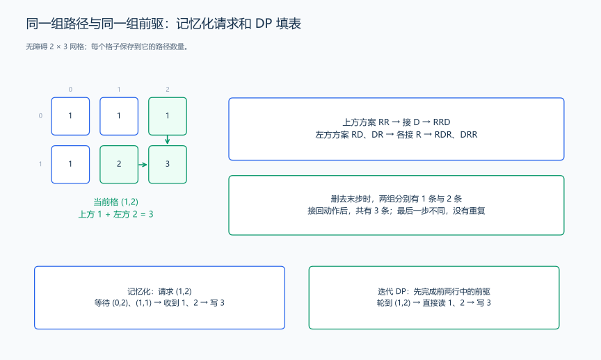
图中每个数字都表示一组路径的数量。dp[1][1]=2 保存的是到这个格子的两条路径的总数；以后接上同一个向右动作时，两条路径各产生一条新路径，所以可以直接使用这个数量，不必重新列出两条路线。动态规划（Dynamic Programming，DP）就是把这些子问题整理成状态，再用已求出的状态计算后面的状态。
推导示范：从三条路线得到一次转移
先只考虑无障碍的 2×3 网格，R 表示右移，D 表示下移。到 (1,2) 的路线是 RRD、RDR、DRR。把最后一步暂时拿掉，逐条核对：
| 当前完整路线 | 删去最后一步 | 剩下的路线终点 | 接回的动作 |
|---|---|---|---|
RRD |
RR |
上方 (0,2) |
D |
RDR |
RD |
左方 (1,1) |
R |
DRR |
DR |
左方 (1,1) |
R |
到上方的每条路线补一个 D，到左方的每条路线补一个 R，就还原了全部路线。两个集合的最后一步不同，一条路线不会在两边各数一次。因此 dp[1][2]=dp[0][2]+dp[1][1]=1+2=3。
把具体坐标 (1,2) 换成一般坐标 (r,c)：上方的行号少 1，左方的列号少 1，得到
\[dp[r][c]=dp[r-1][c]+dp[r][c-1].\]
这里的加号来自“把两个不重叠的路线集合合在一起”。后面求最大价值时比较候选价值，求最少编辑时比较候选费用，合并方式随目标变化。
状态中的信息与后续选择
一个状态是对一个子问题的完整说明，不能只写“dp[i] 表示答案”。例如：
| 状态 | 它保存的答案 | 它允许的方案 |
|---|---|---|
最大子段和的 dp[i] |
最大和 | 必须连续，并且必须以位置 i 结尾 |
LIS 的 dp[i] |
最大长度 | 可以跳过位置，但必须以位置 i 结尾 |
LCS 的 dp[i][j] |
最大长度 | 从两串的前 i、j 个字符中选择，可以不使用末尾 |
01 背包的 dp[i][j] |
最大价值 | 只使用前 i 件物品，总重量不超过 j |
“固定结尾”使我们知道下一项接在哪里；“前缀长度”限定当前能使用哪些字符；背包还需要容量，因为它决定下一件能否放下。状态里的每个下标都有具体用途。
再看楼梯：到同一层的 [1,1,2] 与 [2,1,1]，如果下一步可以任意跳 1、2、3 级，两条路线都能接同样的动作，保存总数就够了。若题目改成“不能连续两次跳 2 级”，第一条后面接 2 不合法，第二条却合法。这时就把到第 i 级的数量分成“最后跳 2”和“最后没有跳 2”两个状态，分别计算，再按后续动作读取。
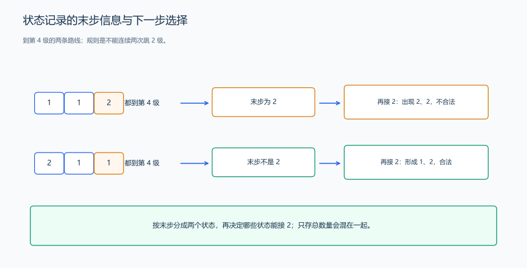
这种“记录的信息足以决定后续操作”的性质叫无后效性。同一个子问题被不同分支请求，叫子问题重叠。求最值时，如果能把方案中的前一部分替换为同状态的更优方案，并且仍能接上当前动作，就可以只保存前驱的最优值，这叫最优子结构。后面的例子会直接展示这样的替换。
从方案拆分到程序
推导一个方程时，可以先计算一个具体格子，再把数字替换成变量：
- 写清当前格子允许哪些完整方案，以及保存数量、最大值还是最小值。
- 列出几个实际方案，按最后一步、倒数第二位置或当前物品的选择分组。
- 删去当前动作，读出剩余子问题的下标。剩余方案中仍可使用哪些字符、物品，容量或金额还剩多少，都在这一步确定。
- 把动作接回去。计数要核对每条方案恰好数一次；最值要核对换成更优前驱后仍然合法。
- 把每组的结果合并，才写出方程。再用最简单的状态解释初值，沿依赖安排循环，确定最后读取哪个格子。
dp 表里存的是子问题的计算结果。方程说明读取哪些结果以及如何合并；循环说明这些结果按什么顺序产生。一维压缩还要区分读取的是上一轮还是本轮，这一点将在背包中用实际数组变化解释。
1. 线性（一维）DP
1.1 斐波那契
题目原文（自拟）： 定义 F(0)=0、F(1)=1，n>=2 时 F(n)=F(n-1)+F(n-2)。给定 0 <= n <= 46，返回 F(n)。示例采用常见 32 位 int 范围。
思路分析： 递归会多次请求同一项，而递推顺序 0、1、2、…、n 使每项都只计算一次。定义 fib[i]=F(i)，先填第 0、1 项，再用前两项推出当前项。
下一项只依赖最近两项，因此还能用 prev2、prev1 保存它们。先将两个旧值相加得到 cur，再写入 prev2=prev1、prev1=cur；这样计算时用的是前两项，更新后保存的又是下一轮所需的最近两项。
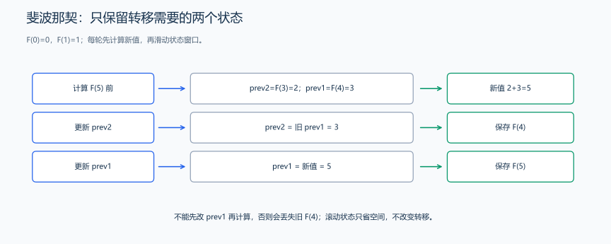
从 (F(3),F(4))=(2,3) 算出 F(5)=5 后，保留的窗口变为 (3,5)。
从定义读取依赖。 这里的递推关系来自题目定义，状态 fib[i] 对应 F(i)，无需从方案分类另猜一个公式。F(0)=0、F(1)=1 已给定；计算 F(2) 时读取 1 和 0 得到 1，F(3)=1+1=2，F(4)=2+1=3，F(5)=3+2=5。依赖下标始终比 i 小，正序填表合法。题目只要求第 n 项，答案就是 fib[n]，而不是把整张表求和。
代码示例： fibonacci 保存整张表，fibonacci_optimized 只保留两个前驱。
#include <vector>
using namespace std;
int fibonacci(int n) {
// 边界情况处理
if (n < 2)
return n;
vector<int> fib(n + 1);
fib[0] = 0, fib[1] = 1;
for (int i = 2; i <= n; ++i)
fib[i] = fib[i - 1] + fib[i - 2];
return fib[n];
}
int fibonacci_optimized(int n) {
// 边界情况处理
if (n < 2)
return n;
int prev2 = 0; // fib[i-2]
int prev1 = 1; // fib[i-1]
int cur; // fib[i]
// 迭代计算斐波那契数列
for (int i = 2; i <= n; i++) {
cur = prev1 + prev2; // 计算当前项
prev2 = prev1; // 更新prev2为前一项
prev1 = cur; // 更新prev1为当前项
}
return cur;
}样例与解释： n=0 返回 0；n=5 依次得到 0、1、1、2、3、5，返回 5；n=10 返回 55。
| 方法 | 时间 | 额外空间 | 需要考虑 |
|---|---|---|---|
| 朴素递归 | 指数级，上界 \(O(2^n)\) | \(O(n)\) 栈 | 重复子问题很多 |
| 记忆化递归 | \(O(n)\) | \(O(n)\) | 缓存与递归栈 |
| 迭代填表 | \(O(n)\) | \(O(n)\) | 可以查询已经计算的各项 |
| 滚动变量 | \(O(n)\) | \(O(1)\) | 不保留完整历史 |
| 固定大小矩阵快速幂 | \(O(\log n)\) 次矩阵操作 | \(O(1)\) | 大指数题还需确定取模或大整数规则 |
复杂度表以机器整数运算为常数代价。超出类型范围时，单纯换成快速幂不会解决精确值溢出；使用大整数后还要计入大整数运算成本。
练习题： 洛谷 P1255 — 数楼梯（斐波那契型递推，完整范围需大整数）。
1.2 跳楼梯
题目原文（自拟）： 从第 0 级出发，每次可以上 1、2 或 3 级，求到达第 n 级的不同跳跃序列数量。0 <= n <= 60，不跳任何一步的空方案计为到达第 0 级的一种方案，结果在 long long 范围内。
思路分析： 先求到第 4 级的方案数。这里的一条方案是完整的跳跃序列，[1,3] 与 [3,1] 是不同方案。令 f[i] 表示从第 0 级恰好到第 i 级的序列数量。
把到第 4 级的七条方案按最后一步分组，再删去末步：
| 最后一步 | 到第 4 级的完整方案 | 删去末步后的方案 | 前驱状态 |
|---|---|---|---|
| 跳 1 | [1,1,1,1]、[1,2,1]、[2,1,1]、[3,1] |
[1,1,1]、[1,2]、[2,1]、[3] |
到第 3 级，共 f[3]=4 条 |
| 跳 2 | [1,1,2]、[2,2] |
[1,1]、[2] |
到第 2 级，共 f[2]=2 条 |
| 跳 3 | [1,3] |
[1] |
到第 1 级，共 f[1]=1 条 |
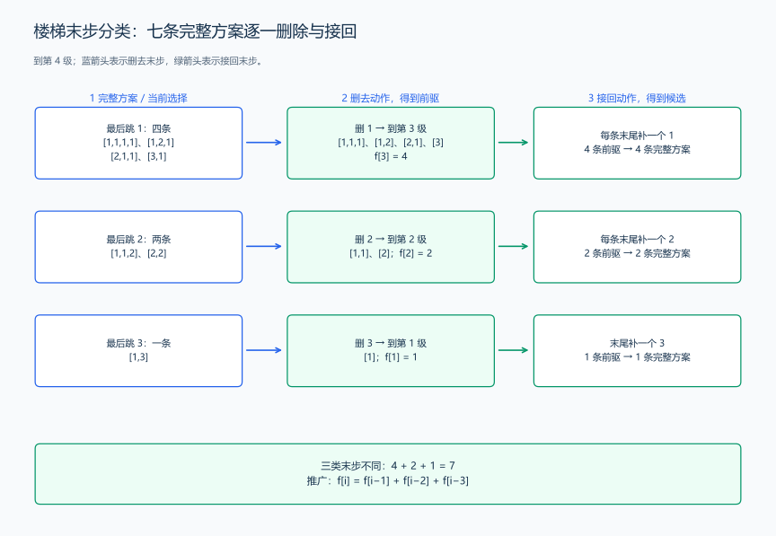
每条完整方案都有且只有一个末步，所以三类覆盖七条方案，没有重复。反过来，到第 3 级的任意序列补一个 1，到第 2 级的任意序列补一个 2，到第 1 级的序列补一个 3，都能到第 4 级。于是 f[4]=4+2+1=7。
把目标 4 换成 i，删去末步 1、2、3 后分别到达 i-1、i-2、i-3，同样逐条接回，就得到
\[f[i]=f[i-1]+f[i-2]+f[i-3]\qquad(i\ge3).\]
f[0]=1 表示空序列 []：从地面直接跳 3 时，是给这个空序列补一个 3，因此它要贡献一条方案。到第 1 级只有 [1]，到第 2 级有 [1,1]、[2]，所以 f[1]=1、f[2]=2。继续算第 3 级，得到 2+1+1=4，恰好对应 [1,1,1]、[2,1]、[1,2]、[3]。
计算第 i 项前，前三项都已算好，因此按 0、1、2、…、n 填表。题目问到第 n 级的数量，读取 f[n]。滚动版本只保留最近三个数，先相加得到新值，再将这三个数向前移一项。
代码示例： 两个函数分别保存整张表和最近三个状态。
#include <vector>
using namespace std;
using ll = long long;
ll stairs(int n) {
// 边界情况处理
if (n < 0)
return 0;
if (n == 0)
return 1;
if (n == 1)
return 1;
if (n == 2)
return 2;
vector<ll> f(n + 1);
f[0] = 1; // 基准情况：从地面开始算1种方式
f[1] = 1; // 爬到第1级：1种方式（爬1级）
f[2] = 2; // 爬到第2级：2种方式（1+1或2）
for (int i = 3; i <= n; ++i)
f[i] = f[i - 1] + f[i - 2] + f[i - 3]; // 状态转移方程
return f[n];
}
ll stairs_optimized(int n) {
if (n < 0)
return 0;
if (n == 0)
return 1;
if (n == 1)
return 1;
if (n == 2)
return 2;
ll a = 1; // f[i-3]
ll b = 1; // f[i-2]
ll c = 2; // f[i-1]
ll d; // f[i]
for (int i = 3; i <= n; ++i) {
d = a + b + c; // 计算当前状态
a = b; // 滚动更新
b = c;
c = d;
}
return c; // 最后c存储的就是f[n]
}样例与解释： n=3 的方案为 1+1+1、1+2、2+1、3，共 4 种；n=4 共 7 种。两个函数时间均为 \(O(n)\)，额外空间分别为 \(O(n)\)、\(O(1)\)。
状态扩展： 每次只允许 1 或 2 级时，转移改成前两项之和；允许 1…m 级时，\(f[i]=\sum_{j=1}^{\min(i,m)} f[i-j]\)，直接计算为 \(O(nm)\)，也可以维护前驱窗口和来优化。若禁止连续两次跳 2 级，还需记录“最后一步是否为 2”，只记录总方案数不足以判断后续是否合法。
练习题： 洛谷 P1255 — 数楼梯（题目只允许每次 1 或 2 级，需调整转移）。
1.3 最大连续子数组和
题目原文（自拟）： 给定非空整数数组，求至少包含一个元素的连续子数组最大和；各累计和在 long long 范围内。还可以要求返回一组达到最大和的起止下标，结束下标包含在区间内。函数对空输入另约定返回和 0，下标为 (-1,-1)。
思路分析： 先看 [-2,1,-3,4]。如果只记录“处理完前几个数的最大和”，最佳区间可能早就结束，接上下一项未必连续。为让接长操作成立，我们先固定右端：dp[i] 表示必须以位置 i 结尾的非空连续子数组最大和。
计算 dp[3] 时，四个允许的区间都以 4 结尾。把最后一个 4 拿掉：
| 当前区间 | 当前和 | 去掉 4 后 | 剩余和 |
|---|---|---|---|
[4] |
4 | 没有前一段，单独从位置 3 开始 | — |
[-3,4] |
1 | [-3]，结尾为位置 2 |
-3 |
[1,-3,4] |
2 | [1,-3]，结尾为位置 2 |
-2 |
[-2,1,-3,4] |
0 | [-2,1,-3]，结尾为位置 2 |
-4 |
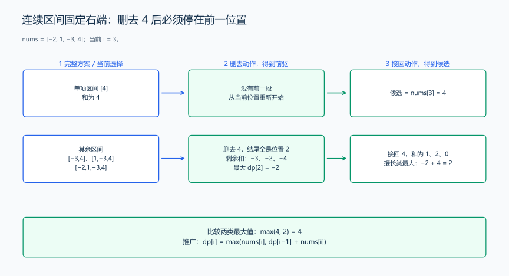
长度超过 1 的区间删去末项后，都会落在“以位置 2 结尾”的状态里。三个前驱和是 -3、-2、-4，最大为 dp[2]=-2。它们接回同一个 4 后变成 1、2、0，最大仍来自原先最大的前驱。给所有候选加上同一个数，不会改变大小顺序，所以接长这一类只需计算 dp[2]+4=2。再与单项 [4] 的 4 比较，得到 dp[3]=4。
一般位置 i 也只有“单项开始”与“接在前一结尾之后”两类。连续性使前驱结尾必须是 i-1，不能跳到更早位置：
\[dp[i]=\max\bigl(nums[i],\ dp[i-1]+nums[i]\bigr).\]
式中 nums[i] 是单项的和；dp[i-1]+nums[i] 是接长这一类的最大和；max 选择两类中较好的一类。前驱和为负时，带着它会使结果比单项更小；前驱和为非负时，接长不会变差。
位置 i |
单项开始 | 接长前驱 | 当前结尾 dp[i] |
已处理结尾中的最大和 |
|---|---|---|---|---|
| 0 | -2 | 第一个元素直接作为一段 | -2 | -2 |
| 1 | 1 | -2+1=-1 |
1 | 1 |
| 2 | -3 | 1-3=-2 |
-2 | 1 |
| 3 | 4 | -2+4=2 |
4 | 4 |
初值 dp[0]=nums[0]，从左到右计算。题目允许最优区间在任意位置结束，因此答案是所有 dp[i] 的最大值。例如 [4,-5] 的最后结尾和为 -1，整题答案仍是第一个元素的 4。
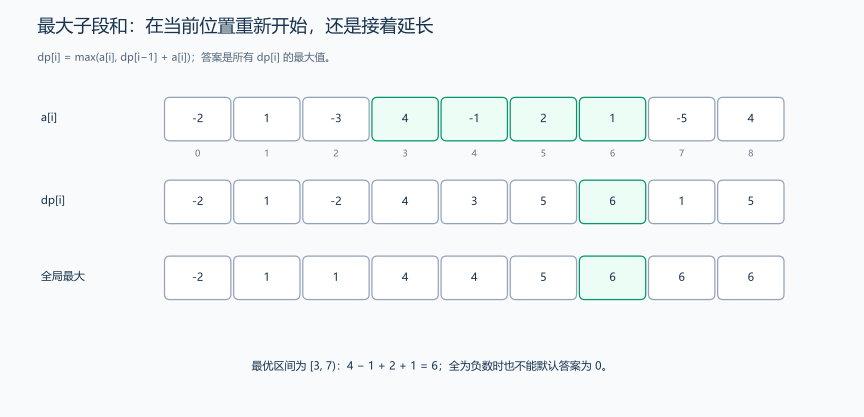
只求和时，用 cur 保存当前结尾值、ans 保存全部已处理结尾的最大值。恢复区间时，单项开始就更新当前左端；只有刷新 ans 时，才把当前左右端复制为答案的两端。
1.3.1 保存每个结尾的最优和
先固定右端 i，再比较“从 i 重新开始”和“延长到 i”。dp[0]=nums[0]，其余按下标递增，最后在所有右端中取最大值。
#include <algorithm>
#include <tuple>
#include <vector>
using namespace std;
using ll = long long;
// 先固定右端 i，再比较“从 i 重新开始”和“延长到 i”。
ll max_subarray_sum(vector<ll> const &nums) {
// 边界情况处理：空数组
if (nums.empty())
return 0;
int n = nums.size();
vector<ll> dp(n);
dp[0] = nums[0]; // 以第0个元素结尾的最大和就是它本身
ll max_sum = dp[0]; // 全局最大和
for (int i = 1; i < n; ++i) {
// 状态转移：要么从当前位置重新开始，要么延续前面的子数组
dp[i] = max(nums[i], dp[i - 1] + nums[i]);
max_sum = max(max_sum, dp[i]); // 更新全局最大值
}
return max_sum;
}1.3.2 只保存当前结尾和
前驱只有 dp[i-1]，因此 cur 替代整张表；ans 保存所有已经处理过的结尾中的最好值。不能让 ans 随 cur 的下降而下降。
#include <algorithm>
#include <tuple>
#include <vector>
using namespace std;
using ll = long long;
// 前驱只有 dp[i-1]，因此 cur 替代整张表；ans 保存所有已经处理过的结尾中的最好值。
ll max_subarray_sum_optimized(vector<ll> const &nums) {
if (nums.empty())
return 0;
ll cur_max = nums[0]; // 当前以i结尾的最大和
ll global_max = nums[0]; // 全局最大和
for (int i = 1; i < nums.size(); ++i) {
cur_max = max(nums[i], cur_max + nums[i]); // 更新当前最大和
global_max = max(global_max, cur_max); // 更新全局最大和
}
return global_max;
}1.3.3 同时恢复区间两端
重新开始时更新 cur_start；刷新历史最好值时才复制左右端点。返回值依次是最大和、左端、右端，右端包含在区间内。
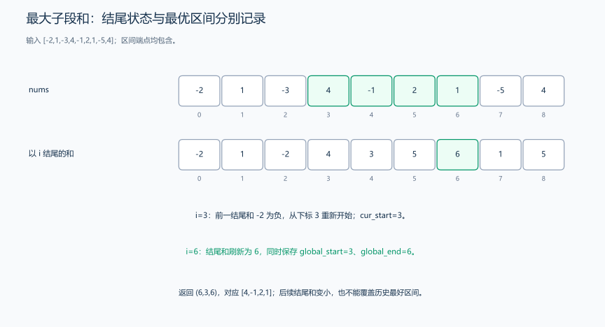
当前区间与历史最优区间的端点分别保存。
#include <algorithm>
#include <tuple>
#include <vector>
using namespace std;
using ll = long long;
// 重新开始时更新 cur_start；刷新历史最好值时才复制左右端点。
tuple<ll, int, int> max_subarray_with_indices(vector<ll> const &nums) {
if (nums.empty())
return {0, -1, -1};
ll cur_max = nums[0];
ll global_max = nums[0];
int cur_start = 0, global_start = 0, global_end = 0;
for (int i = 1; i < nums.size(); ++i) {
if (nums[i] > cur_max + nums[i]) {
// 重新开始新的子数组
cur_max = nums[i];
cur_start = i;
} else {
// 延续当前子数组
cur_max = cur_max + nums[i];
}
// 更新全局最大值及其边界
if (cur_max > global_max) {
global_max = cur_max;
global_start = cur_start;
global_end = i;
}
}
return {global_max, global_start, global_end};
}样例与解释： [-2,1,-3,4,-1,2,1,-5,4] 的最大和为 6，对应 [4,-1,2,1]；[-3,-1] 答案为 -1，不能用 0 代替非空子数组。所有版本时间为 \(O(n)\)；表格版本额外空间 \(O(n)\)，滚动和记录下标的版本为 \(O(1)\)。
扩展： 最大子矩阵和可枚举上下行，把列和压成一维后应用本算法，R×C 矩阵常见代价为 \(O(R^2C)\)。环形数组分为不跨边界、跨边界两种情况，后者可用总和减去最小子数组和；全为负数时，取出最大的单项，得到非空子数组的答案。最大乘积子数组需同时维护最大、最小乘积，因为负数可能交换二者角色。对长度有限制的最大和，可以用前缀和与单调队列维护合法左端的最小前缀值。
练习题： 洛谷 P1115 — 最大子段和。
1.4 最长递增子序列
题目原文（自拟）： 给定整数数组，删除若干元素后保留其原有相对顺序，使剩余元素严格递增。求最大长度；空数组返回 0。需要时还应返回一条达到最大长度的子序列。
思路分析： 子序列可以跳过位置。与最大子段和一样，先固定结尾，令 dp[i] 表示最后一个元素必须是 nums[i]的严格递增子序列最大长度。这样接上一个新元素时，只需检查已知的末尾值。
在 [3,1,2,5,4] 中计算以位置 3 的 5 结尾的状态。单个 [5] 已是长度 1 的方案。更长的方案删去 5 后，倒数第二位置只能是 0、1 或 2：
倒数第二位置 j |
以该位置结尾的最长方案 | 接 5 的判断 | 接回后的候选 |
|---|---|---|---|
| 0 | [3]，长度 1 |
3<5 |
[3,5]，长度 2 |
| 1 | [1]，长度 1 |
1<5 |
[1,5]，长度 2 |
| 2 | [1,2]，长度 2 |
2<5 |
[1,2,5]，长度 3 |
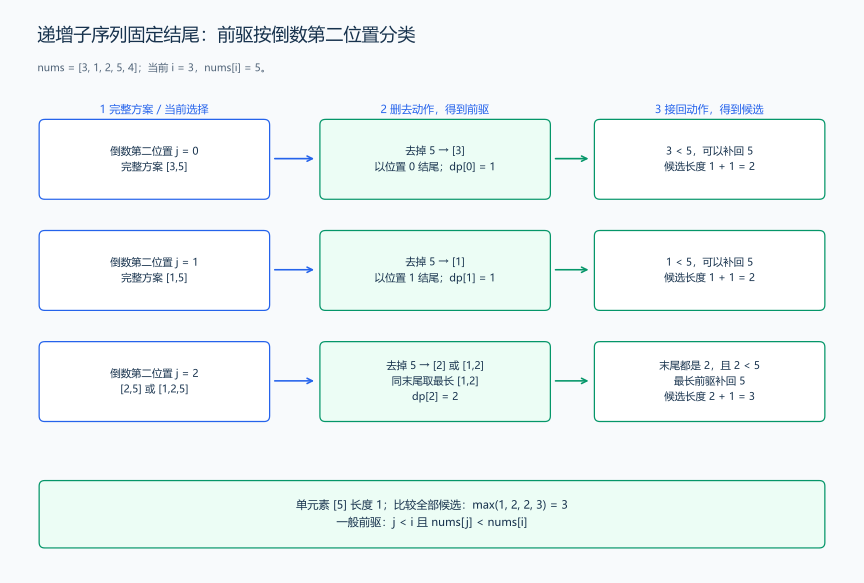
每条多元素方案都有一个倒数第二位置 j。删去末项后，剩余下标仍递增、数值仍严格递增，正是以 j 结尾的子问题。即使原方案的前一段较短，也可以换成这个结尾的最长方案：两者末尾都是 nums[j]，接 5 的判断完全相同，换长后仍然合法。因此每个 j 只需读 dp[j]，接回当前项后的长度是 dp[j]+1。
把 5 和位置 3 换成 nums[i] 和 i，前驱必须同时满足“位置在前”和“数值更小”：
\[dp[i]=\max\left(1,\ \max_{\substack{0\le j<i\\nums[j]<nums[i]}}\bigl(dp[j]+1\bigr)\right).\]
外面的 1 是单元素方案；里面的最大值枚举所有能接上的结尾。程序先写 dp[i]=1，再逐个检查 j，每找到一个合法前驱就比较一次。没有可接前驱时，这个 1 留下。
这组数据的结尾长度为 [1,1,2,3,3]。算最后的 4 时，前面的 5 无法接上，但位置 2 的 2 可以，得到 [1,2,4]。所有前驱下标都小于 i，按 i 递增计算；整题读取所有结尾长度的最大值 3。直接算法枚举每个位置前面的全部位置，时间 \(O(n^2)\)，空间 \(O(n)\)。
记录使长度变大的来源 prev[i]=j，就能从最优结尾沿前驱恢复真实方案；倒着收集之后反转，元素的原下标就按递增排列。
进一步优化时，换一种记录方式：tails[k] 保存长度为 k+1 的递增子序列能达到的最小末尾。相同长度的两个方案末尾为 2 与 5，之后能接在 5 后的数也能接在 2 后，而 3 还能只接在 2 后。因此保留较小末尾即可。
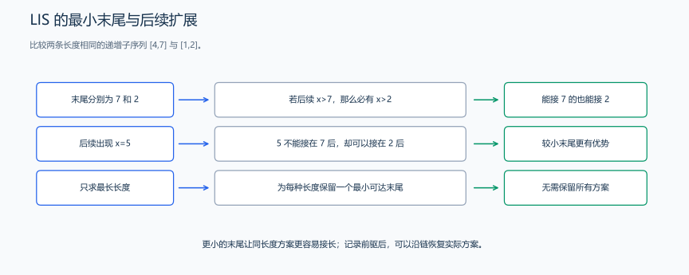
读入 x 时，lower_bound 找到第一个 >=x 的末尾。此前的末尾都小于 x，相应方案可以接长；用 x 替换该位置，或在所有末尾都小于 x 时追加。
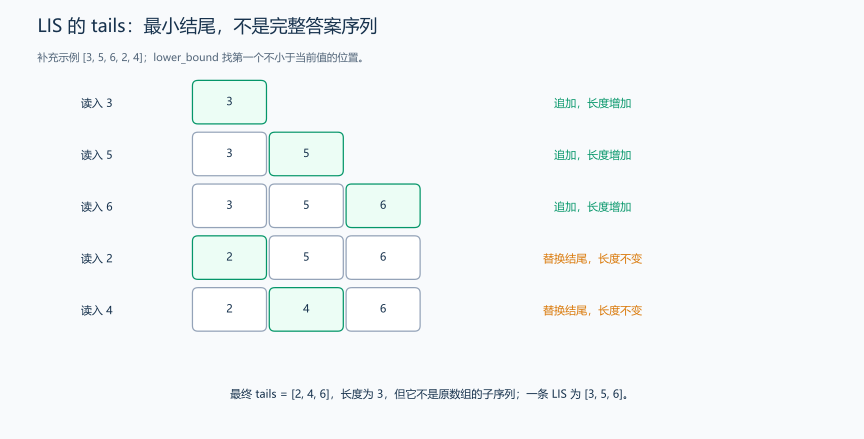
tails 各位置保存的是不同长度的代表，彼此可能来自不同方案。图中 [3,5,6,2,4] 得到 [2,4,6]，这个顺序不是原数组中的子序列，只有它的长度 3 是答案。
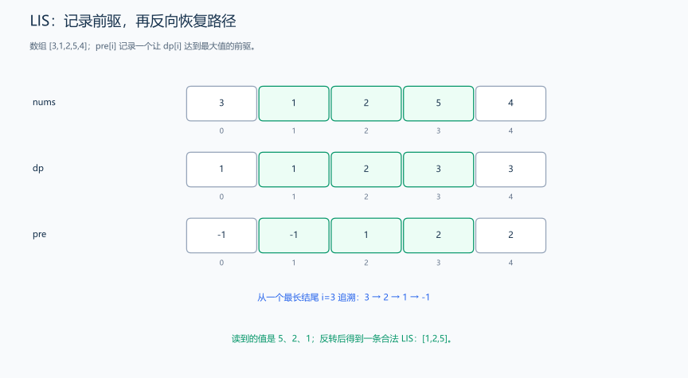
恢复内容时沿 prev 取原数组元素；求长度的 tails 表与保存方案的前驱表作用不同。
1.4.1 枚举所有合法前驱
固定结尾 i，任何长度大于 1 的递增子序列都有一个倒数第二位置 j<i，且 nums[j]<nums[i]。删去末尾后是以 j 结尾的子问题；换成该子问题的最优解仍能接上 nums[i]，因此枚举所有 j 后取最大不会漏掉最优答案。
#include <algorithm>
#include <utility>
#include <vector>
using namespace std;
// 固定结尾 i，任何长度大于 1 的递增子序列都有一个倒数第二位置 j<i，且 nums[j]<nums[i]。
int lengthOfLIS_dp(vector<int> &nums) {
if (nums.empty())
return 0;
int n = nums.size();
vector<int> dp(n, 1); // 初始化为1，每个元素本身就是一个子序列
int max_len = 1;
for (int i = 1; i < n; ++i) {
// 检查i之前的所有元素
for (int j = 0; j < i; ++j) {
if (nums[j] < nums[i]) {
dp[i] = max(dp[i], dp[j] + 1);
}
}
max_len = max(max_len, dp[i]);
}
return max_len;
}1.4.2 用最小末尾与二分优化
相同长度只留下最小末尾，因为它能接受较大末尾可以接受的所有后续值。lower_bound 找第一个不小于 x 的位置，替换末尾或扩展长度；不是把 x 插入原数组排序。
#include <algorithm>
#include <utility>
#include <vector>
using namespace std;
// 相同长度只留下最小末尾，因为它能接受较大末尾可以接受的所有后续值。
int lengthOfLIS_greedy(vector<int> &nums) {
if (nums.empty())
return 0;
vector<int> tails; // tails[k] = 长度为k+1的递增子序列的最小末尾元素
for (int x : nums) {
// 二分查找第一个≥x的元素位置
auto it = lower_bound(tails.begin(), tails.end(), x);
if (it == tails.end()) {
// x比所有元素都大，延长最长子序列
tails.push_back(x);
} else {
// 替换该位置的元素，保持tails的最小末尾性质
*it = x;
}
}
return tails.size(); // tails的长度就是LIS长度
}1.4.3 沿前驱恢复真实子序列
prev[i] 记录让 dp[i] 严格变大的前驱下标。选出最大长度的结尾，再沿 prev 倒走并反转；各元素的下标因此严格递增。tails 来自不同方案，不能直接当作恢复结果。
#include <algorithm>
#include <utility>
#include <vector>
using namespace std;
// prev[i] 记录让 dp[i] 严格变大的前驱下标。
pair<int, vector<int>> getLIS_sequence(vector<int> &nums) {
int n = nums.size();
if (n == 0)
return {0, {}};
vector<int> dp(n, 1);
vector<int> prev(n, -1); // 记录前驱索引，用于回溯
int max_len = 1, max_idx = 0;
for (int i = 0; i < n; ++i) {
for (int j = 0; j < i; ++j) {
if (nums[j] < nums[i] && dp[j] + 1 > dp[i]) {
dp[i] = dp[j] + 1;
prev[i] = j; // 记录前驱
}
}
if (dp[i] > max_len) {
max_len = dp[i];
max_idx = i;
}
}
// 回溯构建LIS序列
vector<int> lis;
int cur = max_idx;
while (cur != -1) {
lis.push_back(nums[cur]);
cur = prev[cur];
}
reverse(lis.begin(), lis.end());
return {max_len, lis};
}样例与解释： [10,9,2,5,3,7,101,18] 的最长长度为 4，例如 [2,3,7,101]；[2,2,2] 的严格递增长度为 1。二分版本时间 \(O(n\log n)\)、额外空间 \(O(n)\)；这里恢复方案的函数采用平方 DP。
扩展： 允许相等时，条件改为 <=，二分改用 upper_bound。严格递减可以直接使用相反比较关系；若用取负转化，要避免最小有符号整数取负溢出。二维严格嵌套可按宽度升序、同宽高度降序排序，再对高度求 LIS，避免同宽元素互相嵌套。统计最长方案数时另设 count：发现更长方案则覆盖数量，长度相同时累加数量；还需说明按下标方案还是按数值方案去重。
练习题： 洛谷 P1020 — 导弹拦截、洛谷 P1439 — 两个排列的最长公共子序列（进阶：排列映射到 LIS）。
1.5 最长不下降子序列
题目原文（自拟）： 给定整数数组，求保持原相对顺序且后一项大于等于前一项的子序列最大长度；空数组返回 0。需要时返回一条对应序列。扩展任务是求后一项小于等于前一项的最长不递增子序列。
思路分析： 在 [1,3,3,2,4] 中，两个 3 位于不同位置。状态仍定义为“必须以位置 i 结尾的最大长度”，但这次后一项可以等于前一项。
计算位置 2 的第二个 3 时，先考虑单项 [3]，长度为 1。然后逐个删去候选方案的末项，检查它前面可以留下哪个结尾：
| 前驱位置 | 最优前驱 | 严格递增时 | 不下降时 |
|---|---|---|---|
| 0，值 1 | [1]，长度 1 |
1<3，候选长度 2 |
1<=3，候选长度 2 |
| 1，值 3 | [1,3]，长度 2 |
3<3 不成立 |
3<=3，接回得到 [1,3,3]，长度 3 |
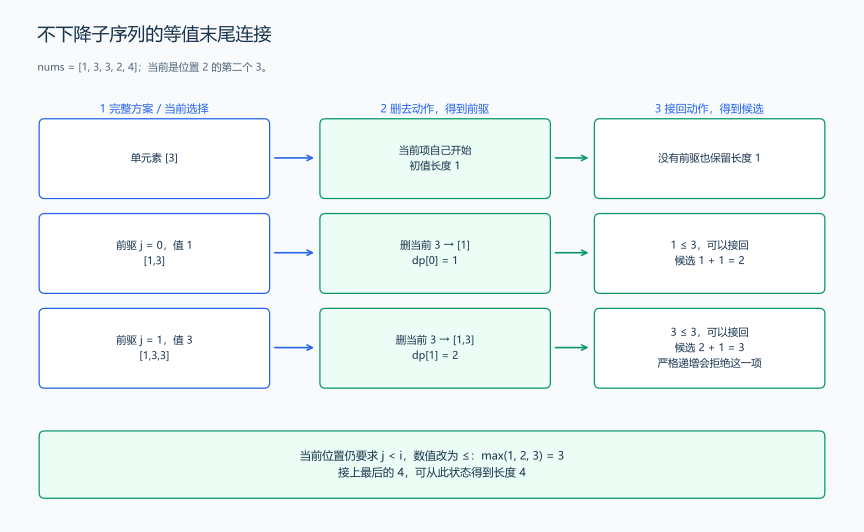
位置依然要求 j<i，所以不能把当前元素接在自身后面；数值判断改为 nums[j]<=nums[i]。把任意合法前驱换成同一结尾的最长方案，末尾值不变，当前项仍能接上。因此
\[dp[i]=\max\left(1,\ \max_{\substack{0\le j<i\\nums[j]\le nums[i]}}\bigl(dp[j]+1\bigr)\right).\]
这组数据按结尾计算得到 [1,2,3,2,4]。第二个 3 的状态为 3；到值 2 时，两个 3 都不能接，只有 1 能接，当前长度降为 2；最后的 4 能接在第二个 3 后，得到 [1,3,3,4]，长度 4。各位置从左到右计算，答案仍取全部结尾的最大值。
二分版本也要保留等值连接。upper_bound 找第一个 >x 的末尾；等于 x 的末尾位于它前面，对应的方案可以补上当前 x，长度增加一。
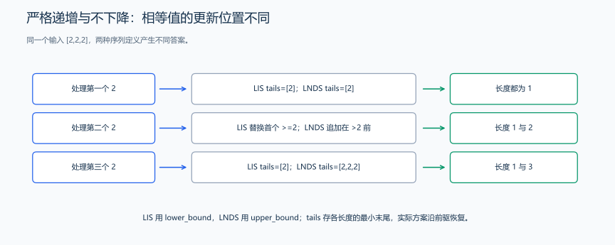
输入 [2,2,2]，严格递增只能取一个 2；不下降可以按三个原下标全部取出。二分方法分别得到长度 1 与 3，变化来自是否允许等值末尾接长。
1.5.1 推导允许相等的前驱
状态仍是“以 i 结尾的最大长度”。仅把前驱条件改为 nums[j]<=nums[i]，因此 dp[i] 取所有合法前驱 dp[j]+1 与单个元素长度 1 中的最大值，最大值的范围是所有满足 j<i 且值不大的 j；单个元素提供初值 1。
#include <algorithm>
#include <functional>
#include <utility>
#include <vector>
using namespace std;
// 状态仍是“以 i 结尾的最大长度”。
int lengthOfLNDS_dp(vector<int> &nums) {
int n = nums.size();
if (n == 0)
return 0;
vector<int> dp(n, 1); // 每个元素自身就是一个子序列
int max_len = 1;
for (int i = 0; i < n; i++) {
for (int j = 0; j < i; j++) {
// 注意：这里是 <= 而不是 <
if (nums[j] <= nums[i]) {
dp[i] = max(dp[i], dp[j] + 1);
}
}
max_len = max(max_len, dp[i]);
}
return max_len;
}1.5.2 upper_bound 保留相等元素
upper_bound 找第一个大于 x 的末尾。已有末尾恰等于 x 时，允许接上 x，使更长的不下降子序列成立；不能使用会覆盖相等末尾的 lower_bound。
#include <algorithm>
#include <functional>
#include <utility>
#include <vector>
using namespace std;
// upper_bound 找第一个大于 x 的末尾。
int lengthOfLNDS_optimal(vector<int> &nums) {
if (nums.empty())
return 0;
vector<int> tails; // tails[k] = 长度为k+1的不下降子序列的最小末尾元素
for (int x : nums) {
// 关键区别：使用upper_bound而不是lower_bound
// 查找第一个 > x 的位置，允许相等元素接在后面
auto it = upper_bound(tails.begin(), tails.end(), x);
if (it == tails.end()) {
// x不小于tails中任何元素，可以延长最长子序列
tails.push_back(x);
} else {
// 替换该位置，保持tails的最小末尾性质
*it = x;
}
}
return tails.size(); // tails的长度就是LNDS长度
}1.5.3 不递增子序列的降序末尾
改成后一项不大于前一项时，tails 按降序维护。相同长度的末尾越大，后面能接的值越多；upper_bound 配合 greater
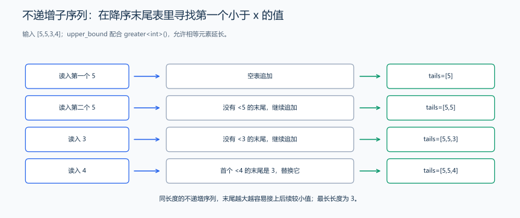
降序末尾数组按相反的比较关系替换。
#include <algorithm>
#include <functional>
#include <utility>
#include <vector>
using namespace std;
// 改成后一项不大于前一项时，tails 按降序维护。
int lengthOfLNIS_optimal(vector<int> &nums) {
// 直接使用降序比较，避免最小有符号整数取负时溢出。
// 方法2：在降序 tails 中使用 upper_bound，允许相等元素继续延长
if (nums.empty())
return 0;
vector<int> tails;
for (int x : nums) {
// 查找第一个 < x 的位置（降序规则下的 upper_bound）
// greater<int>() 定义降序比较关系。
auto it = upper_bound(tails.begin(), tails.end(), x, greater<int>());
if (it == tails.end()) {
tails.push_back(x);
} else {
*it = x;
}
}
return tails.size();
}1.5.4 恢复不下降子序列
平方 DP 保存每个结尾及前驱，判定 nums[j]<=nums[i] 后才允许连接。相同长度的候选无需覆盖已保存前驱，因此返回一条确定的最优序列。
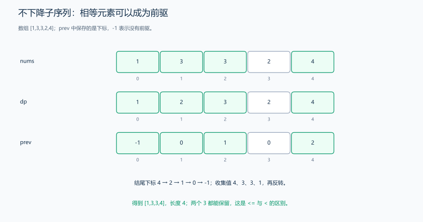
沿前驱下标收集后反转，保留两个相等的 3。
#include <algorithm>
#include <functional>
#include <utility>
#include <vector>
using namespace std;
// 平方 DP 保存每个结尾及前驱，判定 nums[j]<=nums[i] 后才允许连接。
pair<int, vector<int>> getLNDS_sequence(vector<int> &nums) {
int n = nums.size();
if (n == 0)
return {0, {}};
vector<int> dp(n, 1);
vector<int> prev(n, -1); // 前驱索引，用于回溯
int max_len = 1, max_idx = 0;
for (int i = 0; i < n; i++) {
for (int j = 0; j < i; j++) {
// 注意是 <= 而不是 <
if (nums[j] <= nums[i] && dp[j] + 1 > dp[i]) {
dp[i] = dp[j] + 1;
prev[i] = j;
}
}
if (dp[i] > max_len) {
max_len = dp[i];
max_idx = i;
}
}
// 回溯构建序列
vector<int> lnds;
int cur = max_idx;
while (cur != -1) {
lnds.push_back(nums[cur]);
cur = prev[cur];
}
reverse(lnds.begin(), lnds.end());
return {max_len, lnds};
}样例与解释： [1,3,3,2,4] 的严格递增长度为 3，例如 [1,2,4]；不下降长度为 4，例如 [1,3,3,4]。不递增扩展对 [3,3,2] 返回 3，在降序 tails 中用 greater<int>() 配合 upper_bound 找第一个 <x 的位置。
复杂度分析： 平方和恢复方案的实现为 \(O(n^2)\) 时间，二分实现为 \(O(n\log n)\) 时间；额外空间均为 \(O(n)\)。恢复方式与 LIS 相同，只改变前驱合法条件；tails 仍不能直接当作完整答案序列。
练习题： 洛谷 P1020 — 导弹拦截（同时练习非递增与严格递增）。
2. 二维 DP
2.1 最长公共子串
题目原文（自拟）： 给定两个按单字节字符处理的字符串 s1、s2，求它们共同拥有的最长连续子串长度；空串时返回 0。也可以要求返回一个达到该长度的子串，没有公共字符时返回空串。
思路分析： 子串要求连续。令 dp[i][j] 表示公共子串恰好结束在 s1[i-1] 和 s2[j-1]时的最大长度。i、j 是前缀长度，末尾字符的数组下标才是 i-1、j-1；第 0 行、列用于表示一侧为空的情况。
例如 s1=ABAB、s2=BAB，计算 dp[4][3] 时指定的末尾都是 B。当前允许的非空公共子串有 B、AB、BAB。删去共同的最后一个 B：
| 当前片段 | 删去 B 后 | 剩余片段的结尾 | 接回后的长度 |
|---|---|---|---|
B |
空片段 | 当前片段从末尾开始 | 0+1=1 |
AB |
A |
两串前一对字符处 | 1+1=2 |
BAB |
BA |
两串前一对字符处 | 2+1=3 |
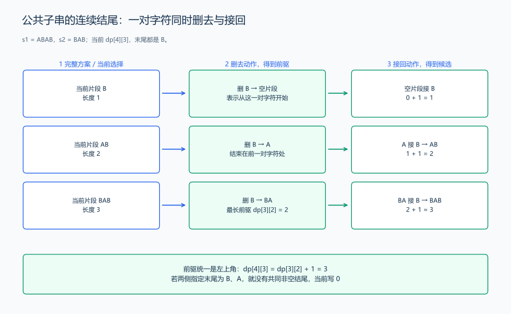
剩余的非空片段必须在 s1[2]、s2[1] 处结束：连续性使它不能跳过中间字符。因此前驱坐标是 (3,2)。该位置的最长片段为 BA，dp[3][2]=2。所有候选都接回同一个 B，最长前驱接回后仍最长，得到 dp[4][3]=2+1=3。
若当前末尾不相等，例如 s1=AB、s2=BA 的 dp[2][2]，指定末尾为 B 与 A。同一非空公共片段的最后字符不可能同时是 B 和 A，所以这里写 0。上方或左方的片段停在别处，拿来填当前格就改变了指定结尾。
将这两种情况推广为
\[dp[i][j]=\begin{cases}dp[i-1][j-1]+1,&s1[i-1]=s2[j-1],\\0,&s1[i-1]\ne s2[j-1].\end{cases}\]
左上角表示两个结尾各退一位；+1 表示接回一对相同字符。左上角为 0 时，0+1 恰好从当前这一对字符开始一段新子串。
第 0 行、列都为 0，因为空串没有非空片段。逐行填写时，前一行的左上角已经算好。整题允许最佳子串在任意位置结束，答案取全表最大值。例如 ab、ax 在 (1,1) 得到 1，右下角为 0，答案仍是公共片段 a 的长度 1。
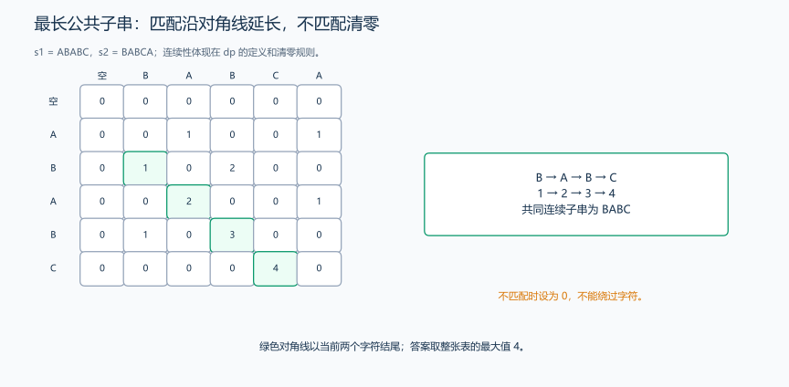
图中 ABABC、BABCA 的对角线对应 BABC。长度从 1、2、3 增长到 4，依次表示这段公共子串的四个连续结尾。滚动版本只保留相邻两行，但每个不匹配位置仍要覆盖为 0。
2.1.1 填写全部结尾状态
末尾相等时把两个前驱结尾的公共子串接长一位；末尾不同就不存在该结尾的非空公共子串，于是写入 0。每个匹配候选都要更新全局最大长度。
#include <algorithm>
#include <string>
#include <vector>
using namespace std;
// 末尾相等时把两个前驱结尾的公共子串接长一位；末尾不同就不存在该结尾的非空公共子串，于是写入 0。
int longestCommonSubstring_length(string s1, string s2) {
int m = s1.length();
int n = s2.length();
if (m == 0 || n == 0)
return 0;
// dp[i][j]: 以s1[i-1]和s2[j-1]结尾的最长公共子串长度
vector<vector<int>> dp(m + 1, vector<int>(n + 1, 0));
int max_len = 0; // 记录最大长度
for (int i = 1; i <= m; i++) {
for (int j = 1; j <= n; j++) {
if (s1[i - 1] == s2[j - 1]) {
dp[i][j] = dp[i - 1][j - 1] + 1; // 字符相等，长度+1
max_len = max(max_len, dp[i][j]);
} else {
dp[i][j] = 0; // 字符不相等，重新开始（子串要求连续）
}
}
}
return max_len;
}2.1.2 两行滚动与不匹配置零
当前状态只读上一行左上角。i%2 选择当前物理行，(i-1)%2 选择上一行；字符相同时写入左上角加一，不相同时写入 0。两种分支都覆盖本轮位置，因此这一行被再次使用时不会保留两轮前的值。
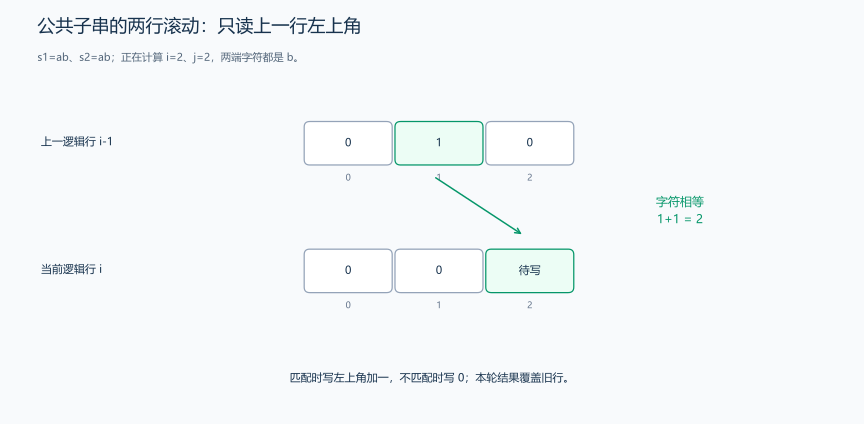
公共子串滚动时只读取上一逻辑行的左上角。
#include <algorithm>
#include <string>
#include <vector>
using namespace std;
// 当前状态只读上一行左上角。
int longestCommonSubstring_space_optimized(string s1, string s2) {
int m = s1.length();
int n = s2.length();
if (m == 0 || n == 0)
return 0;
// 列方向 s2 保持较短，减少滚动数组宽度
if (n > m) {
swap(s1, s2);
swap(m, n);
}
// 只使用两行数组
vector<vector<int>> dp(2, vector<int>(n + 1, 0));
int max_len = 0;
for (int i = 1; i <= m; i++) {
for (int j = 1; j <= n; j++) {
if (s1[i - 1] == s2[j - 1]) {
dp[i % 2][j] = dp[(i - 1) % 2][j - 1] + 1;
max_len = max(max_len, dp[i % 2][j]);
} else {
dp[i % 2][j] = 0; // 关键：子串要求连续
}
}
}
return max_len;
}2.1.3 根据结束位置取出内容
刷新最大长度时记录前缀长度 end_pos，它是半开区间的右边界，不是最后字符的下标。起点为 end_pos-max_len；substr 的第二参数是长度。
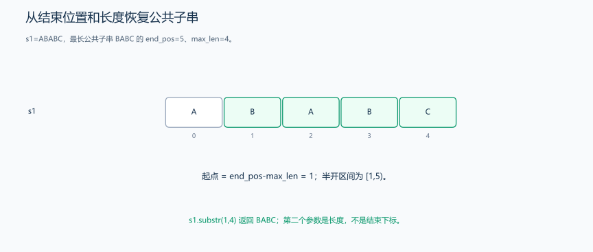
半开区间 [1,5) 对应字符串 BABC。
#include <algorithm>
#include <string>
#include <vector>
using namespace std;
// 刷新最大长度时记录前缀长度 end_pos，它是半开区间的右边界，不是最后字符的下标。
string longestCommonSubstring_content(string s1, string s2) {
int m = s1.length();
int n = s2.length();
if (m == 0 || n == 0)
return "";
vector<vector<int>> dp(m + 1, vector<int>(n + 1, 0));
int max_len = 0;
int end_pos = 0; // 记录最长子串在s1中的结束位置
for (int i = 1; i <= m; i++) {
for (int j = 1; j <= n; j++) {
if (s1[i - 1] == s2[j - 1]) {
dp[i][j] = dp[i - 1][j - 1] + 1;
if (dp[i][j] > max_len) {
max_len = dp[i][j];
end_pos = i; // s1中的结束位置
}
} else {
dp[i][j] = 0;
}
}
}
// 根据结束位置和长度提取子串
if (max_len == 0)
return "";
return s1.substr(end_pos - max_len, max_len);
}代码解释： 表格版本保存所有结尾状态；滚动版本只读上一行的左上角，并在本行不匹配的位置写 0。把较短字符串放在列方向，可减少数组宽度。返回内容时记录最大长度 max_len 及其在 s1 中的半开结束位置 end_pos，取 substr(end_pos-max_len,max_len)。
样例与复杂度： ABABC、BABCA 返回长度 4、内容 BABC；abcde、ace 的最长公共子串长度为 1，而公共子序列长度为 3。时间为 \(O(mn)\)。完整表额外空间 \(O(mn)\)，滚动表为 \(O(\min(m,n))\)；这些函数按值接收字符串，还存在 \(O(m+n)\) 的参数副本空间，需要与 DP 辅助表的口径区分。
扩展： 多字符串的公共子串可从最短字符串的候选子串开始验证，进一步可学习后缀数组或后缀自动机；复杂度要结合总长度和验证方式计算。允许若干不匹配时需要把剩余或已用次数加入状态。循环字符串可以通过拼接处理跨尾首片段；只取原字符串长度内的片段，就对应沿环至多绕一圈。需要所有最优位置时可收集最大长度对应的结束位置。
练习题： 洛谷 P2679 — 子串（进阶：子串状态扩展，不是直接套最长公共子串模板）。
2.2 最长公共子序列
题目原文（自拟）： 给定两个按单字节字符处理的字符串，求二者公共子序列的最大长度。子序列可以跳过字符，但相对顺序必须一致；任一串为空时答案为 0。需要时返回一条最长公共子序列。
思路分析： 子序列可以跳过字符，因此把状态改成前缀中的最优值：dp[i][j] 表示从 s1 的前 i 个字符与 s2 的前 j 个字符中，能选出的最长公共子序列长度。末尾可以选，也可以不选。 这与公共子串固定两个结尾的状态不同。
先计算 ab、ac 的 dp[2][2]。末尾 b、c 不同，无法把它们匹配成公共子序列的最后一对。任意匹配方案至少放弃其中一个末尾：
| 放弃的末尾 | 剩余前缀 | 对应状态 | 最优内容与长度 |
|---|---|---|---|
| 放弃源串 b | a、ac |
dp[1][2] |
a，长度 1 |
| 放弃目标串 c | ab、a |
dp[2][1] |
a，长度 1 |
方案 a 同时出现在两类中。我们要最长长度，因此比较 max(1,1)=1；相加会把同一个方案重复计算。每个较短前缀中的方案在较长前缀中仍合法，而每个当前方案又至少属于其中一类，所以两个前驱的最大值正好是当前最优值。
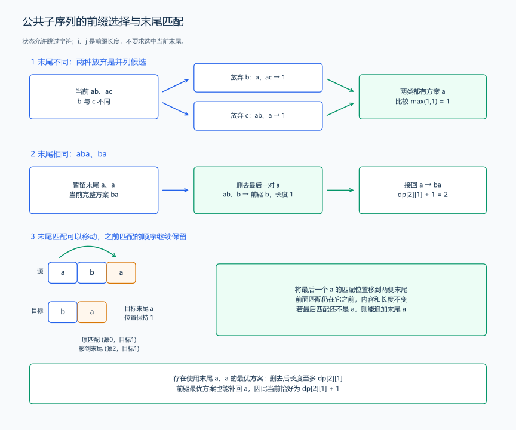
再计算 aba、ba 的 dp[3][2]。末尾都是 a，先把它们留作最后一对匹配。删去这对字符，剩余前缀为 ab、b，最优子序列 b 长度 1；接回 a 得到 ba，长度 2，即 dp[2][1]+1。
还要解释这次直接选末尾会不会遗漏最优方案。取一条最长公共子序列，分两种情况：
- 若最后匹配的字符不是 a，两侧最后的 a 都没有被使用。把这对 a 加在末尾还能保持下标顺序，长度会增加一，因此这样的方案尚未达到最长。
- 若最后匹配的字符是 a，可以把它在两串中的匹配位置都移到最后一个 a。前面的匹配位置仍在它们之前，内容与长度不变。例如只匹配两串靠前的 a，可以把它们改为匹配末尾的 a。
于是一定能选到一条使用这对末尾 a 的最优方案。删去它后，剩余长度最多为 dp[2][1]；而这个前驱的最优方案又确实能接回 a。两边得到同一个长度 dp[2][1]+1=2。
把前缀长度推广为 i、j，得到
\[dp[i][j]=\begin{cases}dp[i-1][j-1]+1,&s1[i-1]=s2[j-1],\\\max\bigl(dp[i-1][j],dp[i][j-1]\bigr),&s1[i-1]\ne s2[j-1].\end{cases}\]
上方去掉源末尾，左方去掉目标末尾，左上角去掉一对末尾；这里的“去掉”是缩短当前子问题的前缀，不是修改输入字符串。一侧前缀为空时只能选出空子序列，所以第 0 行、列为 0。
ab、ac 的状态 |
空目标 | a |
ac |
|---|---|---|---|
| 空源 | 0 | 0 | 0 |
a |
0 | 0+1=1 |
max(0,1)=1 |
ab |
0 | max(1,0)=1 |
max(1,1)=1 |
逐行、每行从左到右填时，上方、左方和左上角都已计算。右下角包含两个完整字符串的全部选择，直接读取 dp[m][n]。遇到不匹配仍可保留以前匹配到的字符，所以它保留前驱最优值。
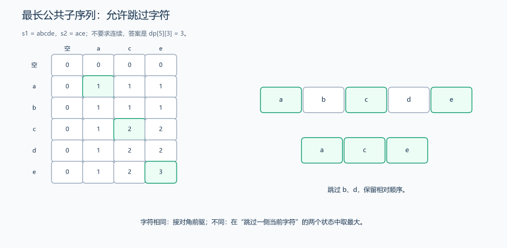
恢复内容时，从右下角沿达到最优值的来源倒走。
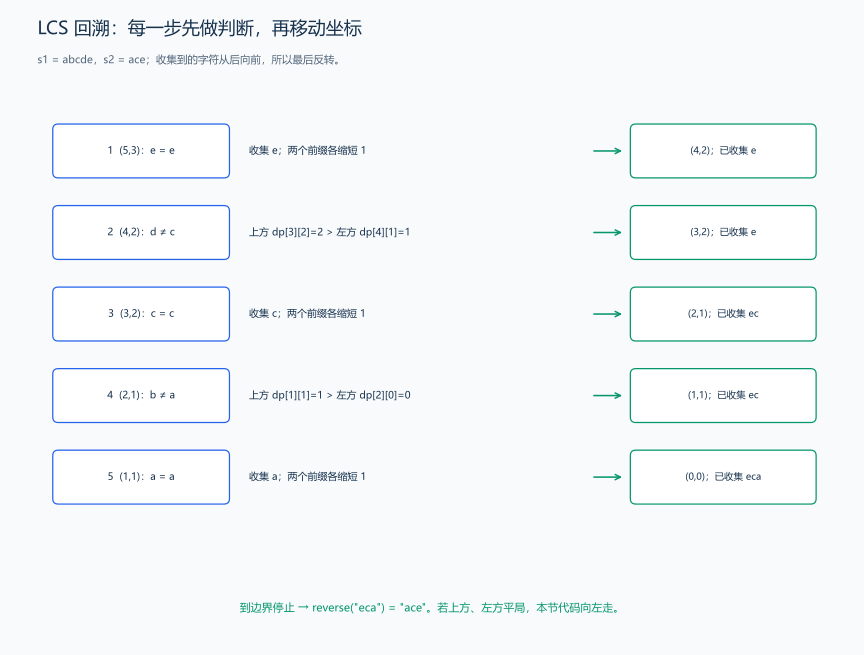
abcde、ace 从 (5,3) 匹配 e，记录 e 并去 (4,2)；此处 d、c 不同，上方为 2、左方为 1，向上走。接着匹配 c，再跳过 b，最后匹配 a。逆序收集 e、c、a，反转得到 ace。它是在已算好的表中找一条最优来源链，表中的结果继续保留。平局时本节代码向左，选择其中一条最优方案。
2.2.1 按末尾匹配结果推导二维表
当末尾不同，公共子序列不可能同时使用这两个末尾，因此至少去掉一侧；两种子问题的最优值取最大即可。末尾相等时，可把这个字符补到较短前缀的公共子序列后；任何最优方案也能调整为使用这对末尾，故取左上角加一。
#include <algorithm>
#include <string>
#include <vector>
using namespace std;
// 当末尾不同，公共子序列不可能同时使用这两个末尾，因此至少去掉一侧；两种子问题的最优值取最大即可。
int longestCommonSubsequence_length(string s1, string s2) {
int m = s1.length();
int n = s2.length();
if (m == 0 || n == 0)
return 0;
// dp[i][j]: s1前i个字符和s2前j个字符的LCS长度
vector<vector<int>> dp(m + 1, vector<int>(n + 1, 0));
for (int i = 1; i <= m; i++) {
for (int j = 1; j <= n; j++) {
if (s1[i - 1] == s2[j - 1]) {
// 字符匹配，长度+1
dp[i][j] = dp[i - 1][j - 1] + 1;
} else {
// 字符不匹配，取两个方向的最大值
dp[i][j] = max(dp[i - 1][j], dp[i][j - 1]);
}
}
}
return dp[m][n];
}2.2.2 分清当前行与上一行
不匹配时取上方和左方最大值：上方属于上一逻辑行，左方属于当前行；匹配时读取上一行左上角。列从左到右保证当前行的左侧已计算。
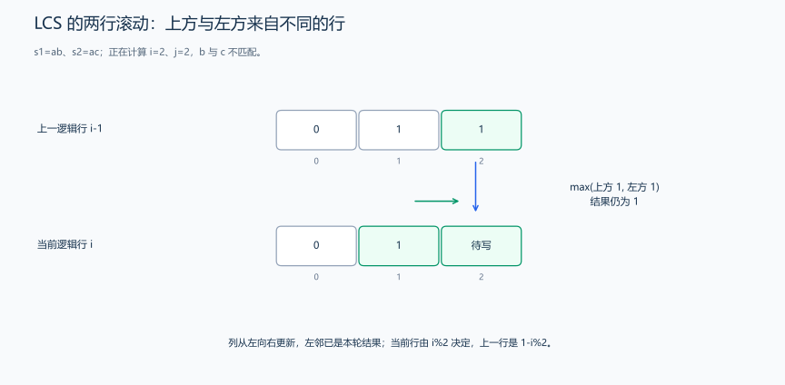
LCS 滚动表同时依赖上一行与本行。
#include <algorithm>
#include <string>
#include <vector>
using namespace std;
// 不匹配时取上方和左方最大值：上方属于上一逻辑行，左方属于当前行；匹配时读取上一行左上角。
int longestCommonSubsequence_space_optimized(string s1, string s2) {
int m = s1.length();
int n = s2.length();
if (m == 0 || n == 0)
return 0;
// 列方向 s2 保持较短，减少滚动数组宽度
if (n > m) {
swap(s1, s2);
swap(m, n);
}
// 只使用两行数组
vector<vector<int>> dp(2, vector<int>(n + 1, 0));
for (int i = 1; i <= m; i++) {
int curr = i % 2;
int prev = 1 - curr;
for (int j = 1; j <= n; j++) {
if (s1[i - 1] == s2[j - 1]) {
dp[curr][j] = dp[prev][j - 1] + 1;
} else {
dp[curr][j] = max(dp[prev][j], dp[curr][j - 1]);
}
}
}
return dp[m % 2][n];
}2.2.3 沿最优来源恢复内容
从右下角倒走。相同字符收集一次并同时缩短两个前缀；不同字符走向维持最优值的一侧。相等候选可以任选，本函数在平局时向左走，最后反转收集结果。
#include <algorithm>
#include <string>
#include <vector>
using namespace std;
// 从右下角倒走。
string longestCommonSubsequence_sequence(string s1, string s2) {
int m = s1.length();
int n = s2.length();
if (m == 0 || n == 0)
return "";
// 先计算dp表
vector<vector<int>> dp(m + 1, vector<int>(n + 1, 0));
for (int i = 1; i <= m; i++) {
for (int j = 1; j <= n; j++) {
if (s1[i - 1] == s2[j - 1]) {
dp[i][j] = dp[i - 1][j - 1] + 1;
} else {
dp[i][j] = max(dp[i - 1][j], dp[i][j - 1]);
}
}
}
// 回溯构造LCS
string lcs;
int i = m, j = n;
while (i > 0 && j > 0) {
if (s1[i - 1] == s2[j - 1]) {
// 当前字符属于LCS
lcs.push_back(s1[i - 1]);
i--;
j--;
} else if (dp[i - 1][j] > dp[i][j - 1]) {
// 向上回溯
i--;
} else {
// 向左回溯
j--;
}
}
reverse(lcs.begin(), lcs.end());
return lcs;
}样例与复杂度： abcde、ace 得到 ace，长度 3；ABCDGH、AEDFHR 可以得到 ADH；AGGTAB、GXTXAYB 可以得到 GTAB。时间为 \(O(mn)\)；完整表和此处恢复方案的表空间为 \(O(mn)\)，只求长度的滚动表为 \(O(\min(m,n))\)。按值参数还会占用字符串副本空间。若有多条最优序列，函数只返回其中一条。
扩展： 原数组与“排序去重后的数组”做 LCS 可以得到严格 LIS 长度，但平方复杂度不适合大规模。带权匹配要把长度加一改为对应匹配收益，并检查允许跳过后的最优转移。多个序列需要更多状态维度，代价通常是各长度的乘积，还要计入每状态的转移数。只允许插入和删除时，最少操作数为 \(m+n-2\operatorname{LCS}\)；允许代价 1 的替换时不能直接使用这个公式。
练习题： 洛谷 P1435 — 回文字串（可转化为与反串的 LCS）、洛谷 P1439 — 两个排列的最长公共子序列（需优化到 LIS）。
2.3 编辑距离
题目原文（自拟）： 给定两个按单字节字符处理的字符串，允许插入、删除、替换一个字符，每次代价为 1。求把第一个变成第二个的最少代价；允许空串。扩展任务是给三种操作分别设置非负代价，或输出一组最优操作说明。所有长度与代价的计算结果都在 int 范围内。
思路分析： 令 dp[i][j] 表示把源串前 i 个字符变成目标串前 j 个字符的最小费用。先求 ab→ac 的 dp[2][2]，用字符对齐观察末尾：同一列是一个源字符与目标字符的对应，— 表示这一侧没有字符。
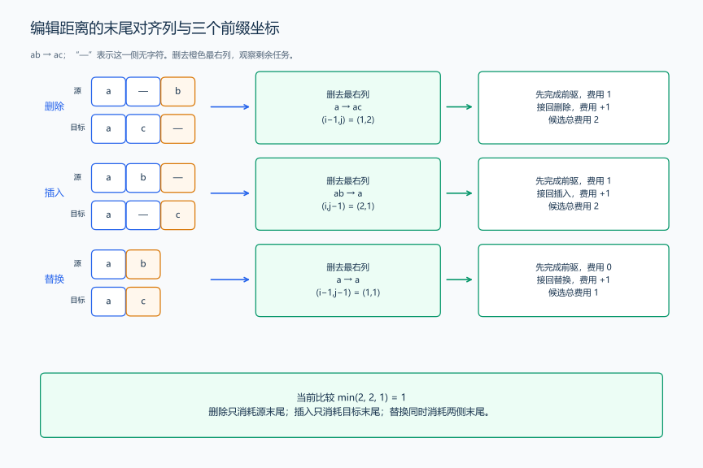
可以把完整的对齐分成三种末尾列：
| 末尾对齐 | 本列动作 | 删去这一列后的任务 | 前驱费用 | 接回费用 |
|---|---|---|---|---|
源 b、目标 — |
删除 b | a→ac，源前缀短一位 |
dp[1][2]=1：插入 c |
1+1=2 |
源 —、目标 c |
插入 c | ab→a，目标前缀短一位 |
dp[2][1]=1：删除 b |
1+1=2 |
| 源 b、目标 c | 把 b 替换为 c | a→a，两个前缀各短一位 |
dp[1][1]=0：直接匹配 |
0+1=1 |
删除这一列时，消耗了哪个串的末尾，就将哪个前缀长度减 1。因此删除的前驱是 (i-1,j)，插入的前驱是 (i,j-1)，替换的前驱是 (i-1,j-1)。
例如删除分支的完整对齐是：源 a、—、b 对目标 a、c、—。前两列已经把 a 变成 ac，最后一列再删除 b。这里拆的是对齐中最右的一列，实际执行操作时可以安排成先删 b 再插 c，费用相同。这样不会把“删除”误解为目标串的长度也必须减少。
每种前驱中的任意合法对齐，都可以接回对应的末尾列。把前面费用为 3 的对齐换成同前缀费用为 1 的对齐，末尾字符与动作不变，完整费用也就少 2。于是每类只保留前驱的最小费用，再加本列费用。末尾不相等时，三种末尾列覆盖候选，比较三类最小费用，ab→ac 得到 min(2,2,1)=1。
末尾相同，例如 ab→ab，两侧 b 可以直接匹配，本列费用为 0，前驱是 a→a。在这里每种编辑费用都是 1，末尾相同的一对可以保留；把它们删掉再重新产生不会降低费用。因此匹配分支直接读左上角。
\[dp[i][j]=\begin{cases}dp[i-1][j-1],&s1[i-1]=s2[j-1],\\\min\bigl(dp[i-1][j]+1,\ dp[i][j-1]+1,\ dp[i-1][j-1]+1\bigr),&s1[i-1]\ne s2[j-1].\end{cases}\]
三项的 +1 都表示接回一个编辑动作，min 对应题目要求的最少次数。匹配时没有 +1，因为保留相同字符不算编辑。
空源串变成目标前 j 个字符，只能逐个插入，费用为 j；源前 i 个字符变为空串，只能逐个删除，费用为 i。所以 dp[0][j]=j、dp[i][0]=i，它们表示实际操作费用。
ab→ac 的状态 |
空目标 | a |
ac |
|---|---|---|---|
| 空源 | 0 | 1 | 2 |
a |
1 | 匹配：0 | 插入 c：1 |
ab |
2 | 删除 b：1 | 比较删除 2、插入 2、替换 1，取 1 |
上方、左方、左上角都比当前任务少处理字符，逐行从左到右计算即可。右下角 dp[m][n] 是完整源串到完整目标串的费用。两行压缩保留上方与左上角，当前行从左到右产生左方。
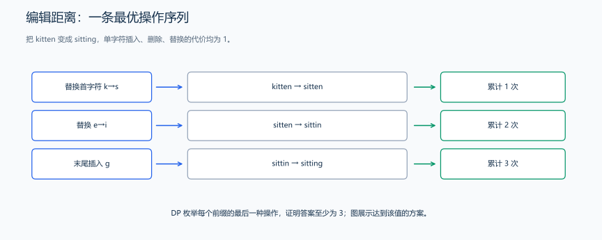
kitten→sitting 可以替换 k→s、替换 e→i，再在末尾插入 g，总计 3 次。带权版本仍拆同样的末尾列，只把各分支的 +1 换成各自费用；空前缀的插入、删除费用也逐个累计。
2.3.1 三种操作对应三个前驱
每个单元先问：把源前缀变成目标前缀，最后处理末尾时是哪种动作？删除只消耗源末尾，插入只消耗目标末尾，替换同时消耗两侧，因此前驱分别是 (i-1,j)、(i,j-1)、(i-1,j-1)。三类都能产生合法方案，取最小值。
#include <algorithm>
#include <string>
#include <vector>
using namespace std;
// 每个单元先问：把源前缀变成目标前缀，最后处理末尾时是哪种动作？删除只消耗源末尾，插入只消耗目标末尾，替换同时消耗两侧，因此前驱分别是 (i-1,j)、(i,j-1)、(i-1,j-1)。
int minDistance(string word1, string word2) {
int m = word1.length();
int n = word2.length();
// dp[i][j]: 将word1的前i个字符转换为word2的前j个字符的最小编辑距离
vector<vector<int>> dp(m + 1, vector<int>(n + 1, 0));
// 先填写空前缀对应的状态值。
for (int i = 0; i <= m; i++) {
dp[i][0] = i; // word1前i个字符转换为空串：删除i次
}
for (int j = 0; j <= n; j++) {
dp[0][j] = j; // 空串转换为word2前j个字符：插入j次
}
// 状态转移
for (int i = 1; i <= m; i++) {
for (int j = 1; j <= n; j++) {
if (word1[i - 1] == word2[j - 1]) {
// 字符相同，无需操作
dp[i][j] = dp[i - 1][j - 1];
} else {
// 字符不同，取三种操作的最小值
int del_cost = dp[i - 1][j] + 1; // 删除word1[i-1]
int ins_cost = dp[i][j - 1] + 1; // 插入word2[j-1]
int rep_cost = dp[i - 1][j - 1] + 1; // 替换word1[i-1]为word2[j-1]
dp[i][j] = min({del_cost, ins_cost, rep_cost});
}
}
}
return dp[m][n];
}2.3.2 两行滚动：先填写空前缀的代价
上方和左上角读上一行，左方读本行。每轮先设置 dp[curr][0]=i，代表删除当前源前缀全部字符；漏掉这一步会读到上一轮的初值。
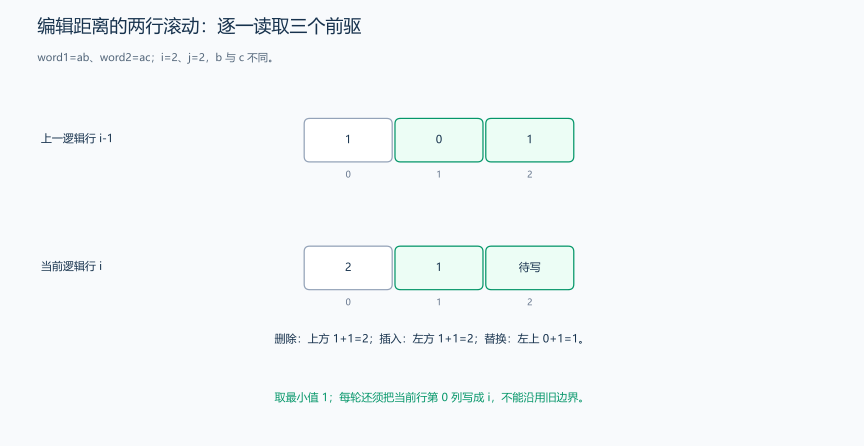
上方和左上角读上一行，左方读本行。
#include <algorithm>
#include <string>
#include <vector>
using namespace std;
// 上方和左上角读上一行，左方读本行。
int minDistance_space_optimized(string word1, string word2) {
int m = word1.length();
int n = word2.length();
// 列方向 word2 保持较短，减少滚动数组宽度
if (n > m) {
swap(word1, word2);
swap(m, n);
}
// 只使用两行数组
vector<vector<int>> dp(2, vector<int>(n + 1, 0));
// 初始化第一行（空串转换为word2）
for (int j = 0; j <= n; j++) {
dp[0][j] = j;
}
// 状态转移
for (int i = 1; i <= m; i++) {
int curr = i % 2;
int prev = 1 - curr;
// 初始化当前行的第一个元素
dp[curr][0] = i;
for (int j = 1; j <= n; j++) {
if (word1[i - 1] == word2[j - 1]) {
dp[curr][j] = dp[prev][j - 1];
} else {
int del_cost = dp[prev][j] + 1; // 删除
int ins_cost = dp[curr][j - 1] + 1; // 插入
int rep_cost = dp[prev][j - 1] + 1; // 替换
dp[curr][j] = min({del_cost, ins_cost, rep_cost});
}
}
}
return dp[m % 2][n];
}2.3.3 不同代价下比较总费用
还是按末尾对齐列拆分，只把本列费用换成对应单价。把 a 变成 b，设插入费用 2、删除费用 3、替换费用 10：
| 接回的末尾动作 | 前驱任务与费用 | 完整费用 |
|---|---|---|
| 删除源 a | 空源变 b，先插入，dp[0][1]=2 |
2+3=5 |
| 插入目标 b | a 变空，先删除，dp[1][0]=3 |
3+2=5 |
| 替换 a 为 b | 空源变空目标，dp[0][0]=0 |
0+10=10 |
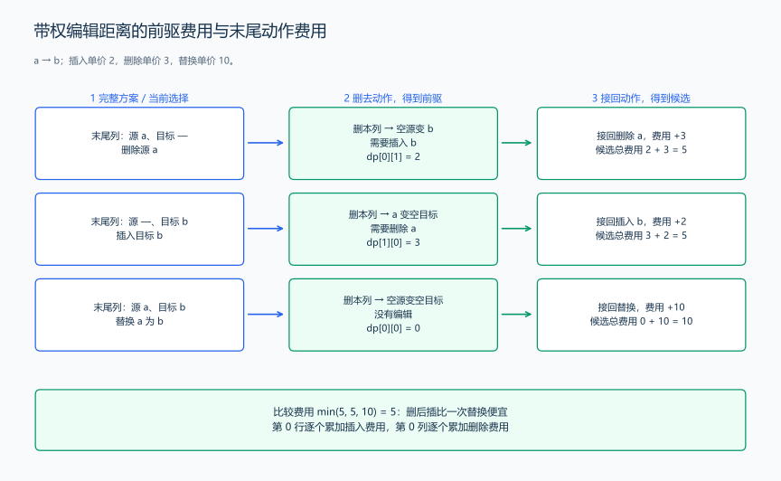
最小费用为 5，选择删 a 再插 b。它用了两次操作，费用却低于只替换一次的 10。不能先求最少次数，再把那条方案换算成价格；在每次转移时就要比较总费用。
末尾不匹配时，令插入、删除、替换费用分别为 I、D、R：
\[dp[i][j]=\min\bigl(dp[i-1][j]+D,\ dp[i][j-1]+I,\ dp[i-1][j-1]+R\bigr).\]
前驱坐标与上一节相同。空源到目标前缀要插入 j 个字符，故 dp[0][j]=jI；源前缀到空目标要删除 i 个字符，故 dp[i][0]=iD。两侧末尾相同时直接匹配，费用为 0，读取左上角。
#include <algorithm>
#include <string>
#include <vector>
using namespace std;
// 每个前驱加对应动作的费用，空前缀的代价也按对应的插入或删除单价计算。
int minDistance_weighted(string word1, string word2, int insert_cost = 1, int delete_cost = 1,
int replace_cost = 1) {
int m = word1.length();
int n = word2.length();
vector<vector<int>> dp(m + 1, vector<int>(n + 1, 0));
// 初始化边界（使用对应的操作代价）
for (int i = 0; i <= m; i++) {
dp[i][0] = i * delete_cost; // 删除i个字符
}
for (int j = 0; j <= n; j++) {
dp[0][j] = j * insert_cost; // 插入j个字符
}
// 状态转移
for (int i = 1; i <= m; i++) {
for (int j = 1; j <= n; j++) {
if (word1[i - 1] == word2[j - 1]) {
dp[i][j] = dp[i - 1][j - 1];
} else {
int del_cost = dp[i - 1][j] + delete_cost; // 删除
int ins_cost = dp[i][j - 1] + insert_cost; // 插入
int rep_cost = dp[i - 1][j - 1] + replace_cost; // 替换
dp[i][j] = min({del_cost, ins_cost, rep_cost});
}
}
}
return dp[m][n];
}2.3.4 填表时记录最优来源
dp 保存最小代价，op 保存选择了哪个前驱。平局先选替换，再选删除，最后插入，因此相同输入会按固定规则恢复。两个表的坐标含义相同，op 的数字不是编辑距离。
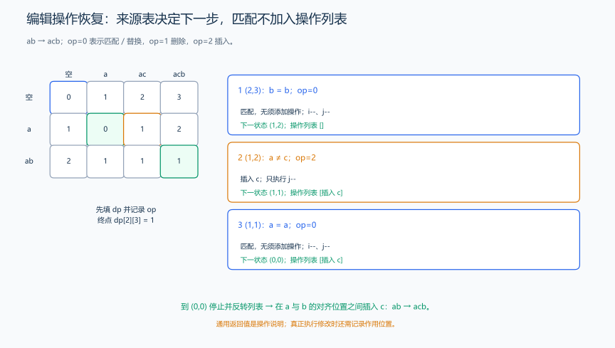
以 ab→acb 为例，dp[2][3]=1。从终点开始，b 与 b 匹配，向左上走到 (1,2)，不记录编辑；此处来源 op[1][2]=2 表示插入 c，只缩短目标前缀，向左走到 (1,1)；随后 a 与 a 匹配，向左上到 (0,0) 停止。操作列表只含“插入 c”，位置在 a 与 b 之间。
op 存的是方向和动作编号，dp 存的是最小代价，两者不能互换。一般情况也按此过程倒走，最后反转记录的编辑说明；匹配字符不算一次编辑。
#include <algorithm>
#include <string>
#include <vector>
using namespace std;
// dp 保存最小代价，op 保存选择了哪个前驱。
struct EditTrace {
vector<vector<int>> dp;
vector<vector<int>> op; // 0 匹配或替换，1 删除，2 插入。
};
EditTrace buildEditTrace(const string &word1, const string &word2) {
int m = word1.length();
int n = word2.length();
// 先计算dp表
vector<vector<int>> dp(m + 1, vector<int>(n + 1, 0));
for (int i = 0; i <= m; i++)
dp[i][0] = i;
for (int j = 0; j <= n; j++)
dp[0][j] = j;
// 同时记录操作来源
vector<vector<int>> op(m + 1, vector<int>(n + 1, 0));
// 0: 匹配/替换, 1: 删除, 2: 插入
for (int i = 1; i <= m; i++) {
for (int j = 1; j <= n; j++) {
if (word1[i - 1] == word2[j - 1]) {
dp[i][j] = dp[i - 1][j - 1];
op[i][j] = 0; // 匹配
} else {
int del_cost = dp[i - 1][j] + 1;
int ins_cost = dp[i][j - 1] + 1;
int rep_cost = dp[i - 1][j - 1] + 1;
if (rep_cost <= del_cost && rep_cost <= ins_cost) {
dp[i][j] = rep_cost;
op[i][j] = 0; // 替换
} else if (del_cost <= ins_cost) {
dp[i][j] = del_cost;
op[i][j] = 1; // 删除
} else {
dp[i][j] = ins_cost;
op[i][j] = 2; // 插入
}
}
}
}
return {dp, op};
}2.3.5 从终点倒走并反转操作
每次按照 op 缩短一个或两个前缀，直到两者都为空。一侧已空时剩余字符只能全部插入或删除。倒走时先收集末尾动作，再收集前面的动作；反转后就按从左到右的对齐顺序输出。
// 每次按照 op 缩短一个或两个前缀，直到两者都为空。
vector<string> recoverEditOperations(const string &word1, const string &word2,
const vector<vector<int>> &op) {
int m = word1.length(), n = word2.length();
// 回溯获取操作序列
vector<string> operations;
int i = m, j = n;
while (i > 0 || j > 0) {
if (i == 0) {
operations.push_back("插入 '" + string(1, word2[j - 1]) + "'");
--j;
continue;
}
if (j == 0) {
operations.push_back("删除 '" + string(1, word1[i - 1]) + "'");
--i;
continue;
}
if (op[i][j] == 0) { // 匹配或替换
if (word1[i - 1] != word2[j - 1]) {
operations.push_back("替换 '" + string(1, word1[i - 1]) + "' -> '" +
string(1, word2[j - 1]) + "'");
}
i--;
j--;
} else if (op[i][j] == 1) { // 删除
operations.push_back("删除 '" + string(1, word1[i - 1]) + "'");
i--;
} else { // 插入
operations.push_back("插入 '" + string(1, word2[j - 1]) + "'");
j--;
}
}
reverse(operations.begin(), operations.end());
return operations;
}2.3.6 用一个入口组合两个步骤
恢复操作需要第 4、5、6 段依次放在同一个文件，先声明 EditTrace 和辅助函数。前三段是独立的求值函数；它们与恢复函数可以共享本节的头文件。
// 恢复操作需要第 4、5、6 段依次放在同一个文件，先声明 EditTrace 和辅助函数。
vector<string> getEditOperations(string word1, string word2) {
// 先记录每格的最优来源，再从终点回溯一条操作说明。
EditTrace trace = buildEditTrace(word1, word2);
return recoverEditOperations(word1, word2, trace.op);
}代码解释： 滚动实现保留上一行，当前行的第 0 列也要随 i 更新。带权函数把三个 +1 换成各自代价。getEditOperations 用来源表回溯，先处理一侧前缀为空时的剩余插入或删除，再反转步骤。它返回按字符对齐顺序排列的操作说明，没有给出动态下标；直接执行修改时还应记录作用位置，不能仅按字符值寻找第一个同名字符。
样例与复杂度： horse→ros 的最少次数为 3；空串到 abc 为 3；kitten→sitting 为 3；intention→execution 为 5。时间 \(O(mn)\)，完整表和来源表为 \(O(mn)\) 空间，滚动 DP 表为 \(O(\min(m,n))\)。按值参数仍占字符串副本空间，返回的操作说明另计输出空间。
扩展： 只允许插入、删除时可用 \(m+n-2\operatorname{LCS}\)；加入相邻交换则成为另一类距离，状态转移中也加入这一步交换的来源和费用。不同字符替换可设不同代价，连续插入或删除的整段惩罚也需要额外状态。近似匹配可以允许不超过 k 的编辑代价，但匹配子串与转换整个字符串的初始状态不同。
练习题： 洛谷 P2758 — 编辑距离。
3. 背包问题
3.1 01 背包
题目原文（自拟）： 有 N 件物品，第 i 件的重量 weight[i] 为正整数、价值 value[i] 为非负整数，每件最多选择一次。背包容量 C>=0，求总重量不超过 C 的最大价值。N 与两个数组长度一致，价值总和在 int 范围内；还可以要求返回一组被选择的从 0 开始的物品下标。
思路分析： 先看重量 [2,1,3]、价值 [4,2,3]。状态 dp[i][j] 表示只用前 i 件物品、总重量不超过 j时的最大价值。前 i 件的下标是 0…i-1，所以当前新加入的物品是下标 i-1。
求 dp[2][3] 时，只能选下标 0、1，重量最多为 3。四个合法集合是空集、{0}、{1}、{0,1}，价值分别为 0、4、2、6。按是否选择当前物品 1 分开：
| 当前集合这一类 | 允许的完整集合 | 去掉当前物品后的集合 | 剩余子问题 | 该类最大价值 |
|---|---|---|---|---|
| 不选物品 1 | 空集、{0} |
集合不变 | 前 1 件、容量 3，dp[1][3] |
4 |
| 选择物品 1 | {1}、{0,1} |
空集、{0} |
前 1 件、容量 3-1=2，dp[1][2] |
4+2=6 |
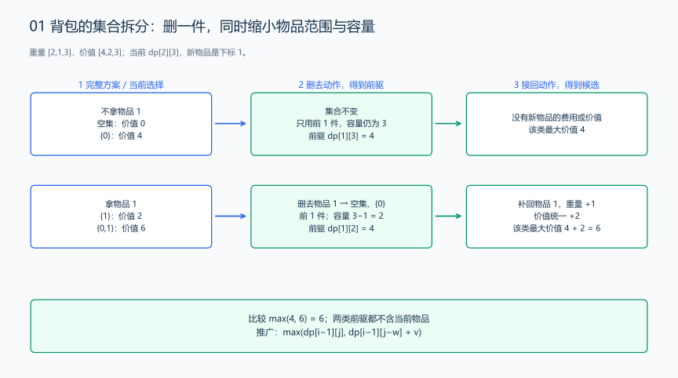
选择物品 1 的方案拿掉它后，可用物品减少一件，剩余重量最多为 2。反过来，任何只用物品 0、重量不超过 2 的集合，补回重量 1、价值 2 的物品 1，总重量就不超过 3。补回的价值始终是 2，所以剩余集合价值越大，完整价值也越大，可以直接读取 dp[1][2]。两类都覆盖到了，比较 max(4,6)=6。
令当前物品重量 w=weight[i-1]、价值 v=value[i-1]，同样得到
\[dp[i][j]=\begin{cases}dp[i-1][j],&j<w,\\\max\bigl(dp[i-1][j],\ dp[i-1][j-w]+v\bigr),&j\ge w.\end{cases}\]
第一项保持原容量，因为没有拿当前物品；第二项先留出重量 w，再补回价值 v。两项都读 i-1 行，剩余集合里都没有当前物品。若物品重于容量，例如重量 3、容量 2，选择分支不存在，直接沿用不选分支。
没有物品时，各容量只对应空集，价值为 0，所以第 0 行全为 0。容量限制是“不超过”，空集对任意容量都合法；没有必要为了达到容量而拿物品。逐件填行，每个状态的两个前驱都在上一行，最终读取 dp[N][C]。
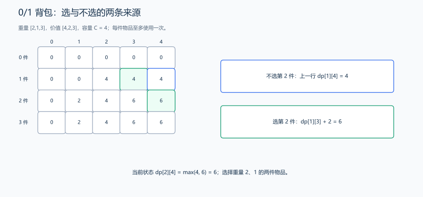
容量 0…4 的四行依次为 [0,0,0,0,0]、[0,0,4,4,4]、[0,2,4,6,6]、[0,2,4,6,6]。第三件在容量 4 处比较“不选的 6”与“容量 1 的 2 加价值 3”，得到 max(6,5)=6。
压缩成一行后的读取顺序。 一行数组更新前存上一行。重量 2、价值 3 的一件物品，容量 4：逆序先算 dp[4]=max(0,dp[2]+3)=3，此时 dp[2] 仍为上一行的 0；之后才更新 dp[2]=3。这就保留了“剩余集合没有当前物品”的含义。
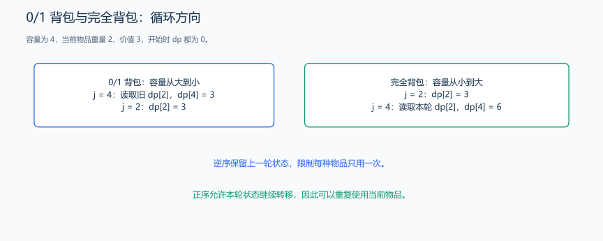
若正序先把 dp[2] 写为 3，再用它算 dp[4]，就会得到 6。这个前驱已经拿过当前物品，接回一次就拿了两件。01 背包因此逆序容量；下一节完全背包会允许这种重复连接。
下面先给出可放进 main 的一维核心片段，再给出独立求值函数与恢复函数。
#include <algorithm>
#include <vector>
using namespace std;
vector<int> w{2, 1, 3}, v{4, 2, 3};
int n = static_cast<int>(w.size()), W = 4;
vector<int> dp(W + 1, 0); // 初始化为容量不超过 W 的最优价值。
for (int i = 1; i <= n; i++) {
for (int j = W; j >= w[i - 1]; j--) { // 注意：需要倒序遍历
dp[j] = max(dp[j], dp[j - w[i - 1]] + v[i - 1]);
}
}恢复时，比较当前行与上一行：值变大则记录当前件并扣重量；相等则跳过也能保留一组最优方案。
样例从 (3,4) 开始，当前行与上一行都为 6，跳过物品 2；到 (2,4)，6 大于上一行的 4，拿物品 1，容量减为 3；到 (1,3)，4 大于上一行的 0，拿物品 0，容量减为 1。逆序记录 [1,0]，反转为 [0,1]，总重量 3、价值 6。两行相等时选择跳过只是恢复其中一组最优解，其他最优解仍可能拿当前件。
3.1.1 按选或不选划分二维状态
每个合法集合恰属于“不选当前物品”或“选当前物品”之一。选中时去掉它，剩下只能使用前 i-1 件且重量不超过 j-w；若剩余部分不是该子问题的最优解，替换它即可提高总价值，故可以使用上一行最优值。
#include <algorithm>
#include <utility>
#include <vector>
using namespace std;
// 每个合法集合恰属于“不选当前物品”或“选当前物品”之一。
int knapsack_01_2d(int N, int C, vector<int> &weight, vector<int> &value) {
// dp[i][j]: 考虑前i件物品，背包容量为j时的最大价值
vector<vector<int>> dp(N + 1, vector<int>(C + 1, 0));
for (int i = 1; i <= N; i++) {
for (int j = 1; j <= C; j++) {
// 不选第i件物品
dp[i][j] = dp[i - 1][j];
// 如果背包容量足够，考虑选择第i件物品
if (j >= weight[i - 1]) {
dp[i][j] = max(dp[i][j], dp[i - 1][j - weight[i - 1]] + value[i - 1]);
}
}
}
return dp[N][C];
}3.1.2 用逆序容量保留上一行
压缩后从大容量向小容量更新。读到的 dp[j-w] 还没有被当前物品覆盖，对应上一行；这保证当前物品只被使用一次。
#include <algorithm>
#include <utility>
#include <vector>
using namespace std;
// 压缩后从大容量向小容量更新。
int knapsack_01_1d(int N, int C, vector<int> &weight, vector<int> &value) {
// dp[j]: 背包容量为j时的最大价值
vector<int> dp(C + 1, 0);
for (int i = 0; i < N; i++) { // 遍历物品
// 逆序遍历容量，确保每个物品只被使用一次
for (int j = C; j >= weight[i]; j--) {
dp[j] = max(dp[j], dp[j - weight[i]] + value[i]);
}
// 正序会读取本轮已更新的前驱，导致同一物品重复使用：
// 假设物品重量2，价值3，C=4
// 正序：j=2时dp[2]=3, j=4时dp[4]=dp[2]+3=6（错误，使用了两次）
// 逆序：j=4时dp[4]=3, j=2时dp[2]=3（正确，只使用一次）
}
return dp[C];
}3.1.3 通过相邻两行恢复物品
从最后一件和完整容量回溯。若当前行比上一行大，当前物品一定参与这条最优来源，记录下标并扣重量；值相同则不选也能保持最优，向上一行继续。
#include <algorithm>
#include <utility>
#include <vector>
using namespace std;
// 从最后一件和完整容量回溯。
pair<int, vector<int>> knapsack_01_with_items(int N, int C, vector<int> &weight,
vector<int> &value) {
vector<vector<int>> dp(N + 1, vector<int>(C + 1, 0));
// 计算dp表
for (int i = 1; i <= N; i++) {
for (int j = 1; j <= C; j++) {
dp[i][j] = dp[i - 1][j];
if (j >= weight[i - 1]) {
dp[i][j] = max(dp[i][j], dp[i - 1][j - weight[i - 1]] + value[i - 1]);
}
}
}
// 回溯找出选择的物品
vector<int> selected_items;
int j = C;
for (int i = N; i > 0; i--) {
if (dp[i][j] != dp[i - 1][j]) {
// 说明第i件物品被选中了
selected_items.push_back(i - 1); // 记录物品索引（0-based）
j -= weight[i - 1]; // 减少剩余容量
}
}
reverse(selected_items.begin(), selected_items.end());
return {dp[N][C], selected_items};
}样例与解释： 重量 [2,1,3]、价值 [4,2,3]、容量 4，最大价值为 6，选择下标 0、1，重量 3，没有装满但仍最优。N=0 或 C=0 时答案为 0。
复杂度： 三种函数的填表时间均为 \(O(NC)\)。二维与恢复方案的表空间 \(O(NC)\)，一维额外空间 \(O(C)\)；恢复结果最多 N 个下标。容量是数值规模，输入容量非常大时不能只看物品数就开表。
扩展： 恰好装满时，只有容量 0 初始可达，其余为负无穷，转移前还要判断前驱可达；方案计数时，dp[0]=1，其余为 0，按物品逆序容量累加。可以把状态改成“达到价值 v 的最小重量”，在总价值较小而容量很大时更合适。多重背包可把有限数量拆成若干 01 物品包，例如 13 件拆成 1、2、4、6，组合能表达 0…13 件；也可以继续学习按重量余数分类的单调队列优化。分割等和子集可先检查总和是否为偶数，再用 01 可行性 DP 判断能否达到总和的一半。
练习题： 洛谷 P1048 — 采药、洛谷 P1049 — 装箱问题、洛谷 P1164 — 小 A 点菜（方案计数）。
3.2 完全背包
题目原文（自拟示例）： 有 n 种物品，第 i 种重量为正整数 weight[i]、价值为非负整数 value[i]，每种可以选择任意多件。背包容量为 capacity >= 0，求重量不超过容量的最大总价值；所有答案在 long long 范围内。
思路分析： 与 01 背包相比，现在同一种物品可以拿多件。仍先保留两个维度：f[i][j] 表示只用前 i 种、重量不超过 j 的最大价值。第 i 种在数组中的下标是 i-1。
只考虑重量 2、价值 3 的一种物品，容量 4。按拿了几件列出全部方案：
| 件数 | 总重量 | 总价值 | 去掉一件后 |
|---|---|---|---|
| 0 | 0 | 0 | 没有当前物品，属于不拿分支 |
| 1 | 2 | 3 | 剩 0 件，重量 0、价值 0 |
| 2 | 4 | 6 | 剩 1 件，重量 2、价值 3 |
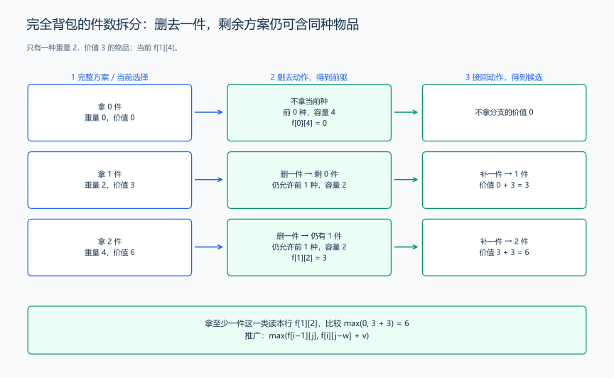
把“拿至少一件”的两个方案各拿掉一件，得到 0 件和 1 件。这些剩余方案的重量不超过 4-2=2，仍然允许这一种物品，所以前驱是本行 f[1][2]，最大价值为 3。给这个最优剩余方案补一件，得到 3+3=6；不拿分支是上一行 f[0][4]=0，比较后取 6。
一般容量 j 也按“不拿当前种”和“至少拿一件当前种”分为两类。后一类去掉一件，容量少 w，种类范围仍为前 i 种；任何这种剩余方案补一件后又回到当前问题。令 w=weight[i-1]、v=value[i-1]，得到
\[f[i][j]=\begin{cases}f[i-1][j],&j<w,\\\max\bigl(f[i-1][j],\ f[i][j-w]+v\bigr),&j\ge w.\end{cases}\]
与 01 背包并排看：
| 去掉当前一件后 | 剩余方案中能否还有当前种 | “拿”的前驱 |
|---|---|---|
| 01 背包 | 这一件已经拿掉，不能再出现 | 上一行 dp[i-1][j-w] |
| 完全背包 | 可以仍有一件或多件 | 本行 f[i][j-w] |
也可以直接枚举拿 k 件：\(f[i][j]=\max_{0\le k\le\lfloor j/w\rfloor}(f[i-1][j-kw]+kv)\)。上面的两分支式把“至少一件”先拆下一件，剩余件数交给本行较小容量处理，省去了每格再次枚举件数。
初始化仍是空集价值 0，允许不装满。逐种处理时，本行从小容量到大容量计算：j-w<j，需要的本行前驱先产生。一维数组里，更新前的 dp[j] 保留不拿分支；已经更新过的 dp[j-w] 则对应本行。
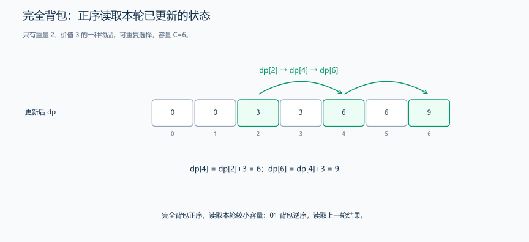
重量 2、价值 3、容量 0…6 时，先写 dp[2]=3，再由它写 dp[4]=6，最后由 6 写 dp[6]=9，全表为 [0,0,3,3,6,6,9]。这三个数分别对应一件、两件、三件。若逆序读旧行，就只能接回一次，计算结果会变成 01 背包。
恰好装满的任务中，只有容量 0 一开始有空方案；其他容量先记录没有方案，再寻找能接入的前驱。重量为 0、价值为正的物品则每加一件都增加价值而不占容量，最大价值可以一直增长；本题的正重量使每次接入都缩小前驱容量。
#include <algorithm>
#include <vector>
using namespace std;
long long completeKnapsack(const vector<int> &weight, const vector<int> &value, int capacity) {
vector<long long> dp(capacity + 1, 0);
for (size_t i = 0; i < weight.size(); ++i) {
// 正序容量循环，允许本轮状态继续使用同一种物品。
for (int j = weight[i]; j <= capacity; ++j) {
dp[j] = max(dp[j], dp[j - weight[i]] + value[i]);
}
}
return dp[capacity];
}样例： 重量 [2, 3]、价值 [3, 4]、容量 6，可以选三个第一种物品，最大价值为 9。
代码解释： 与 0/1 背包相比，关键区别是容量循环方向。正序允许重复使用本轮物品；逆序限制每种物品至多使用一次。两个数组按同一物品下标配对读取。时间 \(O(nC)\)，额外空间 \(O(C)\)。
练习题： 洛谷 P1616 — 疯狂的采药。
3.3 最少硬币数量
题目原文（自拟示例）： 给定一些正整数面值，每种硬币数量无限，求凑出非负金额 amount 所需的最少硬币数。无法凑出返回 -1，金额为 0 时返回 0。
思路分析： 回到贪心中面值 [1,3,4]、金额 6 的例子。先拿 4 会留下 1+1，共 3 枚；方案 3+3 只要 2 枚。因此逐个比较可能的末尾硬币，让较好的前驱方案参与组合。
令 dp[x] 表示恰好凑出金额 x的最少硬币数。金额必须恰好，金额 5 的方案不能直接当金额 6 的答案。对金额 6，拿掉选作最后一枚的硬币：
| 最后一枚 | 剩余金额 | 该金额的最少方案 | 接回后的枚数 |
|---|---|---|---|
| 1 | 6-1=5 |
1+4，2 枚 |
dp[5]+1=3 |
| 3 | 6-3=3 |
3，1 枚 |
dp[3]+1=2 |
| 4 | 6-4=2 |
1+1，2 枚 |
dp[2]+1=3 |
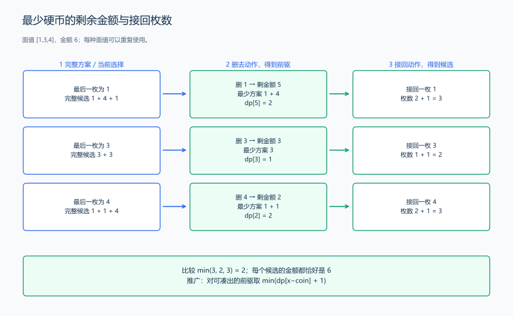
任意非空方案都有一枚硬币可以拿掉；剩下金额一定为 x-coin。同一金额的剩余方案若用了更多硬币，就把它换成最少枚数的方案，再接回这枚 coin，金额保持 x，总枚数更少。于是每种末尾硬币只需读取该剩余金额的最优值。
同一组硬币可能按不同顺序出现在多个末尾候选中，例如 1+4+1 与 1+1+4。这里比较枚数的最小值，重复候选不会改变最小值；若任务改为数硬币组合，就还要重新安排枚举方式来避免重复。
把 6 换成 x，逐个面值试接回来：
\[dp[x]=\min_{\substack{coin\le x\\x-coin\text{ 能凑出}}}\bigl(dp[x-coin]+1\bigr).\]
x-coin 是扣掉这一枚后的金额，+1 是补回这一枚，min 选择枚数最少的候选。没有可接前驱时，当前金额继续记录为 INF，表示尚无方案。
金额 0 的空方案需要 0 枚，所以 dp[0]=0。其他金额先写 INF。面值 [2] 时，金额 1 没有可放的硬币，保持 INF；算金额 3 时，放 2 后还剩金额 1，它没有方案，所以金额 3 也没有方案。程序最后将这种结果返回为 -1。
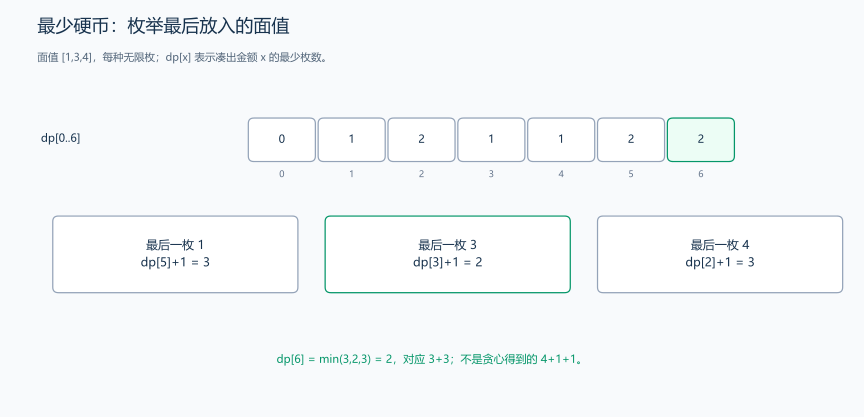
面值 [1,3,4] 的金额 0…6 依次得到 [0,1,2,1,1,2,2]。所有面值为正，剩余金额 x-coin 比 x 小，因此从小金额到大金额填写。金额 6 的三个前驱值已经得到，直接比较 3、2、3，最终读取 dp[amount]。
#include <algorithm>
#include <limits>
#include <vector>
using namespace std;
int minCoins(const vector<int> &coins, int amount) {
constexpr int INF = numeric_limits<int>::max() / 2;
vector<int> dp(static_cast<size_t>(amount) + 1, INF);
dp[0] = 0; // 凑出金额 0 不需要硬币，其他金额初始不可达。
for (int x = 1; x <= amount; ++x) {
for (int coin : coins) {
if (coin <= x && dp[x - coin] != INF) {
dp[x] = min(dp[x], dp[x - coin] + 1);
}
}
}
return dp[amount] == INF ? -1 : dp[amount];
}样例： 面值 [1, 3, 4]、金额 6，答案为 2，选择 3 + 3；面值 [2]、金额 3，返回 -1。
代码解释： INF 表示不可达；只有前驱金额可达时才能转移。这解决了前面“先拿最大面值”贪心可能失败的问题。时间 \(O(kM)\)，额外空间 \(O(M)\)，其中 k 是面值数量，M 是目标金额。
练习题： 洛谷 P2842 — 纸币问题 1。
4. 网格 DP：按依赖顺序填表
题目原文（自拟）： 有一个 rows×columns 的网格，1<=rows,columns<=500，只能向右或向下移动，不能越界。部分格子是障碍。求从左上角 (0,0) 到右下角 (rows-1,columns-1) 的合法路径数量，对 1000000007 取模。函数输入是等长行组成的 vector<vector<bool>> blocked，true 表示障碍；返回一个整数。起点或终点为障碍时返回 0；只有一个可走格子时，不移动计为一条路径。
从搜索递推到迭代顺序： 状态仍是 dp[r][c]，表示从起点到当前格子的路径数。先把具体路线与每个加数对应起来，再安排填表顺序。
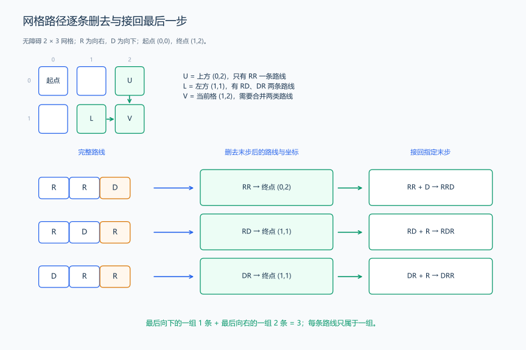
计算 (1,2) 时，RRD 删去 D 后是到 (0,2) 的 RR；RDR、DRR 删去 R 后是到 (1,1) 的 RD、DR。给上方的每条路线接一个 D，给左方的每条路线接一个 R，完整路线全部还原。两类最后一步不同，数量为 1+2=3。
计算一般格子 (r,c) 时也是如此，上方提供最后向下的全部路线，左方提供最后向右的全部路线。取模只是控制保存的数值，路径分类仍按同样方式相加：
\[dp[r][c]=\bigl(dp[r-1][c]+dp[r][c-1]\bigr)\bmod M.\]
第一行没有上方格子，实际只接左方路线；第一列实际只接上方路线。起点的不移动空路线计为 1。遇到障碍，所有要经过该格的路线都无法接入，格子写 0。
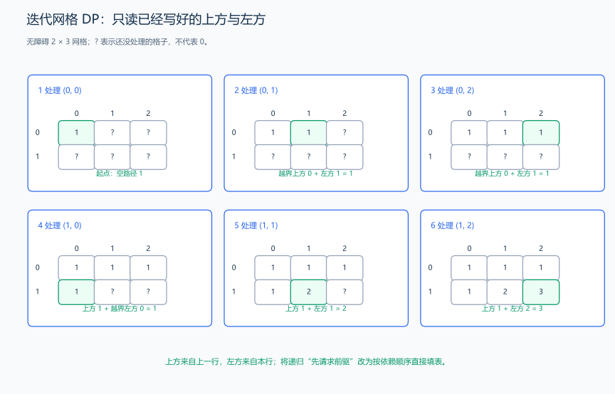
| 处理位置 | 已经能读到的路线数 | 当前写入 |
|---|---|---|
(0,0) |
起点，空路线 | 1 |
(0,1) |
左方 1 | 1 |
(0,2) |
左方 1 | 1 |
(1,0) |
上方 1 | 1 |
(1,1) |
上方 1，左方 1 | 2 |
(1,2) |
上方 1，左方 2 | 3 |
按行从上到下、行内从左到右，每个上方在上一行已经完成，每个左方在当前行已经完成。记忆化从终点发出请求，直到最简单状态返回；迭代从起点逐格写入，到终点时直接读取同一份依赖产生的结果。
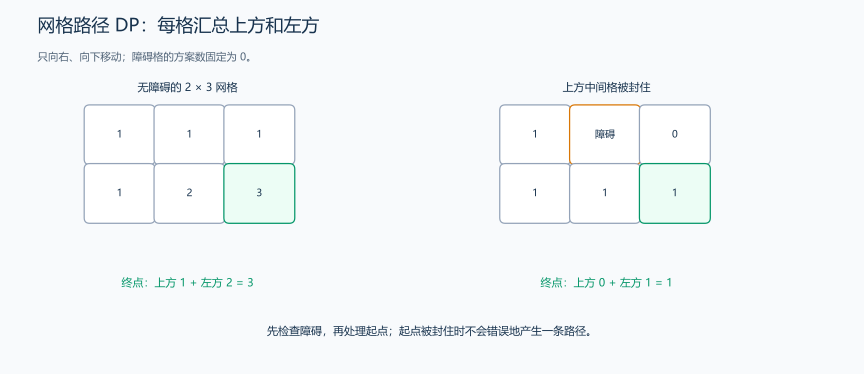
把 (0,1) 封住，RRD 与 RDR 都经过它，只有 DRR 保留。第一行变成 1、0、0，第二行依次为 1、1、1；终点从上方得到 0、从左方得到 1，仍使用同一个相加方程得到 1。
#include <vector>
using namespace std;
int gridPaths(const vector<vector<bool>> &blocked) {
constexpr int mod = 1000000007;
int rows = static_cast<int>(blocked.size());
int columns = static_cast<int>(blocked[0].size());
vector<vector<int>> dp(rows, vector<int>(columns, 0));
for (int row = 0; row < rows; ++row) {
for (int column = 0; column < columns; ++column) {
// 障碍格不参与转移，起点被封住时也保持 0 条路径。
if (blocked[row][column]) {
continue;
}
if (row == 0 && column == 0) {
dp[row][column] = 1;
} else {
long long count = 0;
if (row > 0) {
count += dp[row - 1][column];
}
if (column > 0) {
count += dp[row][column - 1];
}
dp[row][column] = static_cast<int>(count % mod);
}
}
}
return dp[rows - 1][columns - 1];
}样例与代码解释： 无障碍 2×3 返回 3；把 (0,1) 变成障碍后第一行是 1、0、0，第二行是 1、1、1，返回 1。先处理障碍再处理起点，与记忆化版本的起点、障碍处理方式一致。每格常数工作，时间与表空间均为 \(O(rows\times columns)\)；进一步压缩为一行时，上方是覆盖前的 dp[c]，左方是本轮的 dp[c-1]，遇到障碍时将 dp[c] 写为 0，表示没有路径穿过这个格子。
练习题： 洛谷 P1002 — 过河卒。